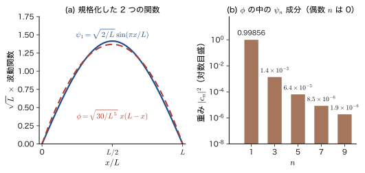
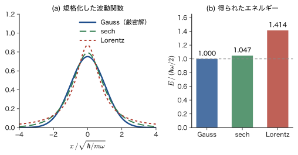
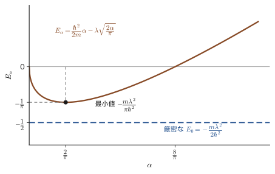
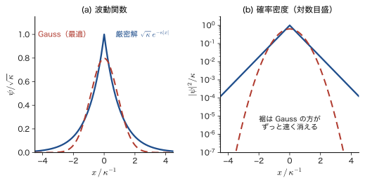
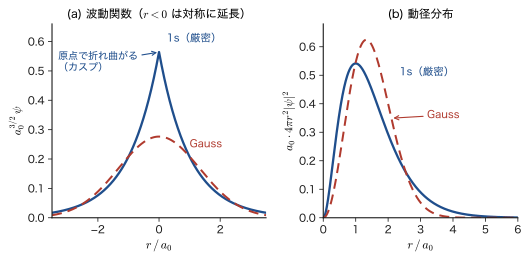
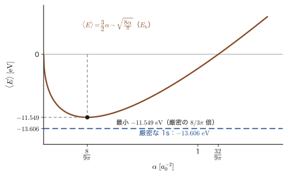

第30章変分原理 — エネルギーの上限を探す
お椀の中にビー玉を入れると，どこから手を離しても，玉は転がって最後は椀の底で止まる．力学では，位置エネルギーが最小の点が安定な平衡点である（AD 03 第44章 44.4 の最小作用の原理も，「ある量が最小になる道筋を選ぶ」という同じ形の考え方だった）．量子力学でも，原子や分子の基底状態は「エネルギーが最も低い状態」である．そうであれば，電子の状態（波動関数）をいろいろ試してみて，エネルギーが最も低くなったものを選べば，基底状態に近づけるはずである．この素朴な発想が正しいことを保証してくれるのが，この章の主題の変分原理（variational principle）である．
変分原理の主張は，一言でいえば「どんな関数を使ってエネルギーを計算しても，その値は真の基底状態のエネルギーより低くならない」である．だから，試した関数のうちエネルギーが低いものほど真の基底状態のエネルギーに近く，「下げたもの勝ち」という明快な指針が手に入る（波動関数そのものの近さは別の問題で，30.2 節で見るように，エネルギーには誤差の 2 乗しか反映されない）．前の部（第V部）で学んだ摂動論は，「解ける問題」に「小さなずれ」を加えた問題を解く方法だった．変分法には解ける問題も小さなずれも要らない．関数を思いつきで書き，その関数を数個のパラメータで動かして，エネルギーが最小になるところを探すだけである．しかも答えは必ず真の値の上側にある．代わりに，誤差がどのくらいかは，この方法自身は教えてくれない．この章では，この原理を証明し（30.2 節），使い方を練習し（30.3〜30.5 節），使えない場面（30.6 節）も確かめる．
この原理は現代の分子・固体の電子状態計算の土台である．電子が 2 個のヘリウム原子でさえ Schrödinger（シュレーディンガー）方程式は解析的に解けず，原子が $N$ 個の結晶では電子が $10^{23}$ 個規模になる．厳密に解けない問題を，「関数を選んでエネルギーを最小にする」という手順に置き換えて近似的に解くのが，Hartree–Fock 法や密度汎関数理論（DFT）の出発点である．
この部の見取り図．第VI部「変分原理」は 3 つの章からなる．
- 第30章（本章）：変分原理の主張と証明，試行関数の選び方，最も簡単な 2 つの練習問題（$\delta$ 関数ポテンシャルと水素原子に Gauss 関数を使う計算），励起状態と変分原理の限界．
- 第31章：ヘリウム原子を「有効核電荷」$Z'$ という 1 つのパラメータで解く（電子による遮蔽の解釈が得られる）．試行関数を基底関数の線形結合にすると，エネルギー最小化が行列の固有値問題（永年方程式）になる線形変分法．
- 第32章：Gauss 関数を試行関数の部品にする（STO-$n$G）．積分が解析的にできるという利点と，原点付近の形が合わない欠点（本章の水素原子の例で予告する）．
前の部（第V部，第27章〜第29章）とのつながりは次のとおりである．摂動論では 1 次摂動でヘリウムの基底状態エネルギーが $-74.833\ \mathrm{eV}$ と得られ，実験値 $-79.005\ \mathrm{eV}$ とは約 5 % ずれた．変分法では，同じヘリウムでも「試行関数そのものを最適化する」ことで実験値にもっと近づけられる（第31章）．次の第VII部（第33章以降）の Hartree–Fock 法は「Slater 行列式の形をした試行関数」の上での変分法であり，第37章の Roothaan–Hall 方程式は線形変分法（第31章）そのものである．
- 変分原理：規格化された任意の試行関数のエネルギー期待値 $\mel{\phi}{\hat{H}}{\phi}$ が真の基底状態エネルギー $E_0$ 以上であること．試行関数・Rayleigh 商・変分法の 4 手順
- その証明：固有関数の展開 $\ket{\phi}=\sum_k c_k\ket{\psi_k}$ から，$\mel{\phi}{\hat{H}}{\phi}=\sum_k E_k\abs{c_k}^2\ge E_0$ を行を飛ばさずに導く．エルミート性・直交性・完全性・射影の意味
- 規格化されていない関数への拡張と等号条件，エネルギーの誤差が状態の誤差の 2 乗にしか効かないこと，停留条件が Schrödinger 方程式と同値であること（Lagrange の未定乗数法）
- 試行関数の選び方（境界条件・対称性・節・漸近形・カスプ），スケーリングから導く virial 定理，箱・球形量子ドット・調和振動子での数値例
- $\delta$ 関数ポテンシャルへの Gauss 型試行関数の適用，厳密解との比較（$2/\pi=63.7\ \%$），薄い量子井戸への応用
- 水素原子への Gauss 型試行関数の適用（$\langle E\rangle_{\min}=\tfrac{8}{3\pi}\varepsilon_{1\mathrm{s}}=-11.549\ \mathrm{eV}$，厳密解より約 15 % 高い），Slater 型との比較，カスプ条件，浅いドナー準位
- 励起状態の上界（直交条件と対称性），変分原理が上界しか与えないことの意味
あとで参照するもの：本書の調和振動子（第13章），球対称の井戸と量子ドット（14.7），遮蔽（第18章），摂動論（第27章）．数学は，関数の内積（大学数学 第27章 27.2），固有値・固有ベクトル（第12章 12.1），期待値（第14章 14.5），Lagrange の未定乗数法（第6章 6.7），ガンマ関数（第32章 32.2），球座標の Laplacian（第44章 44.4）．物理は，変分法の Euler–Lagrange 方程式（AD 03 第44章 44.5）と Lagrange の未定乗数法（44.7）．この章の例題で使う箱・調和振動子・水素原子の厳密解は，数学の側面から姉妹編の大学数学 第45章 45.3（無限井戸），第46章 46.2（調和振動子），第48章 48.1（無限球型ポテンシャル），48.3（水素原子）でも扱った（第47章は円柱座標と Bessel 関数）．この章では，それらを試行関数の例として物理の側から使う．
もとにしたノート：望月泰英『物理学ノート 量子力学3』 pp. 32–34．
30.1 変分原理とは — 解けない問題を上から押さえる
30.1.1 なぜ「解かずに近似する」方法が必要か
時間を含まない Schrödinger 方程式 $\hat{H}\psi=E\psi$ が厳密に解けるのは，箱（第10章），調和振動子（第13章），水素原子（第15章）のように，粒子が 1 個で，ポテンシャルが特別に単純な場合に限られる．電子が 2 個のヘリウム原子になると，電子どうしの Coulomb 反発 $e_0^2/(4\pi\varepsilon_0\abs{\bm r_1-\bm r_2})$ のために 2 つの電子の座標が絡み合い，解析解は知られていない．分子や結晶では，電子の数が数十から $10^{23}$ 個規模になる．厳密に解くことをあきらめて，近似解を上手に作る方法が必要になる．
第V部で学んだ摂動論は，解ける問題 $\hat{H}_0$ を出発点にして「小さなずれ」$\lambda\hat{V}$ の効果を補う方法だった．ところが，ヘリウムの電子間反発は「小さなずれ」というにはやや大きく，1 次摂動では $-74.833\ \mathrm{eV}$（実験値 $-79.005\ \mathrm{eV}$）にとどまった（第29章）．摂動論には「解ける問題が近くにあること」という前提がある．これに対して変分法（variational method）は，解ける問題が近くになくても使える．考え方は次のように単純である．
- 正解を知らないまま，「これくらいの形だろう」という関数 $\phi$ を，パラメータを含む形で書いてみる．
- その関数を使ってエネルギーの期待値を計算する．
- パラメータを動かして，期待値が最も低くなるところを探す．
この操作が「正解に近づく操作」になっていることを保証するのが，次の定理である．この方法は，音や弦の振動数を上から見積もる方法として Rayleigh（レイリー卿）が使い，Walther Ritz（リッツ，1908–09 年）が一般の固有値問題の近似解法として整えたことから，Rayleigh–Ritz の変分法とも呼ばれる．
30.1.2 変分原理の主張
定理30.1 変分原理
ハミルトニアン（Hamiltonian）$\hat{H}$ の固有値のうち最も低いもの（基底状態のエネルギー）を $E_0$ とする．$\hat{H}$ の固有関数と同じ境界条件を満たす，規格化された（$\braket{\phi}{\phi}=1$）任意の関数 $\phi$ に対して，エネルギーの期待値は $E_0$ より低くならない：
\begin{equation} \mel{\phi}{\hat{H}}{\phi}\ \ge\ E_0 \label{eq:30-var} \end{equation}言い換えると，任意の波動関数を用いてエネルギーを計算すると，その計算値は真のエネルギーより低くならない．
定理の中の「任意の」関数は，実際に計算するときには私たちが自由に書き下せる関数である．そのため次のように呼ぶ．
定義30.1 試行関数
変分原理でエネルギーを計算するために私たちが選んで用いる関数 $\phi$ を，試行関数または試行波動関数（trial function，trial wave function）という．真の固有関数 $\psi_k$ とは違い，$\phi$ は正しい解である必要がない．ふつうは，正解に近そうな形をした関数に，値を調整するためのパラメータ（変分パラメータ）$\alpha,\beta,\dots$ を含ませておく．
定理には 3 つの前提が隠れている．(i) $\phi$ が規格化されていること（規格化されていない関数への拡張は 30.2.4 節で行う），(ii) $\phi$ が固有関数と同じ境界条件を満たし，エネルギー期待値 $\mel{\phi}{\hat{H}}{\phi}$ が有限の値に定まること（$\hat{H}\phi$ が通常の関数として計算できるほどなめらかである必要はない．30.3.1 節の補足），(iii) $\hat{H}$ に最低の固有値 $E_0$ が存在する（エネルギーが下に有界である）こと．束縛状態を扱う原子・分子の問題ではこれらは満たされている．
イメージ：なぜ「あらゆる分子構造計算の基礎」なのか
この原理は，現代のあらゆる分子構造計算の基礎になっている．理由は，多電子系の Schrödinger 方程式を厳密に解くことが困難だからである．原理は，「厳密な解が分からなくても，どんな関数でも試してよい．ただし，出てきた値は必ず真の値の上側になる」という安心感を与える．計算の値がずれているときも「真の値は，得られた値より下にある」と言い切れるので，複数の近似を比べるとき，エネルギーがより低い方が真のエネルギーに近い近似であると判定できる（波動関数そのものの近さは別で，30.2.5 節で見るように，エネルギーには誤差の 2 乗しか反映されない）．分子の構造（原子の並び）も，エネルギーが最小になる原子配置として決められる．
30.1.3 積分で書けば何をしているのか — Rayleigh 商
エネルギーの期待値 $\mel{\phi}{\hat{H}}{\phi}$ は，第10章で導入した Dirac 記法で書かれているが，中身は積分である．表30.1 に対応をまとめる．
| 量 | Dirac 記法 | 積分 |
|---|---|---|
| 規格化 | $\braket{\phi}{\phi}$ | $\displaystyle\int\phi^*\phi\,\dd\tau=\int\abs{\phi}^2\dd\tau$ |
| エネルギー期待値 | $\mel{\phi}{\hat{H}}{\phi}$ | $\displaystyle\int\phi^*\,\hat{H}\phi\,\dd\tau$ |
| 体積要素 $\dd\tau$ | 1 次元：$\dd x$．1 粒子の 3 次元：$\dd^3r=r^2\sin\theta\,\dd r\,\dd\theta\,\dd\varphi$．$N$ 電子系：$\dd^3r_1\cdots\dd^3r_N$（スピン変数の和も含む） | |
試行関数が規格化されていないときにも使えるように，次の量を定義しておく．
定義30.2 Rayleigh 商（エネルギー汎関数）
ゼロでない関数 $\phi$ に対して，
\begin{equation} E[\phi]\equiv\frac{\mel{\phi}{\hat{H}}{\phi}}{\braket{\phi}{\phi}} =\frac{\displaystyle\int\phi^*\,\hat{H}\phi\,\dd\tau}{\displaystyle\int\phi^*\phi\,\dd\tau} \label{eq:30-rayleigh} \end{equation}を Rayleigh 商（Rayleigh quotient）という．$\phi$ が規格化されているとき分母は 1 なので，$E[\phi]=\mel{\phi}{\hat{H}}{\phi}$ である．
$E[\phi]$ は，関数 $\phi$ を 1 つ与えると数（エネルギー）が 1 つ決まる対応である．関数を入力とし数を出力とするこの種の対応を汎関数（functional）という（AD 03 第44章 44.4 の「作用」も汎関数だった）．変分原理は，「汎関数 $E[\phi]$ は，$\phi$ が基底状態の関数のとき最小値 $E_0$ をとる」と言い換えられる．
イメージ：混ぜ物のエネルギーは平均で，平均は最低値より低くならない
定理 30.1 の証明は次の節で行うが，中身は「食塩水の混合」のようなものである．濃さの違う食塩水を何種類か混ぜると，混ぜたものの濃度は，混ぜる前の濃度を（量で重みをつけて）平均したものになる．したがって，混ぜたものは最も薄い食塩水よりは薄くならないし，最も濃い食塩水よりは濃くならない．試行関数 $\phi$ は固有状態（エネルギーが決まった状態）$\psi_0,\psi_1,\psi_2,\dots$ の「混合物」であり，そのエネルギー期待値は各固有状態のエネルギーを重み（混合の割合）で平均したものになる．重みは 0 以上で足して 1 になる．したがって平均は最低のエネルギー $E_0$ より低くならない．
例題30.1 期待値は固有値の加重平均
水素原子の試行関数を，$\phi=\sqrt{0.90}\,\psi_{1\mathrm{s}}+\sqrt{0.07}\,\psi_{2\mathrm{s}}+\sqrt{0.03}\,\psi_{3\mathrm{s}}$（$\psi_{n\mathrm{s}}$ は規格化された水素原子の $ns$ 軌道）とする．エネルギー期待値 $\mel{\phi}{\hat{H}}{\phi}$ を求め，基底状態のエネルギー $E_1=-13.606\ \mathrm{eV}$ と比べよ．また重み $(0.90,\,0.07,\,0.03)$ をどのように変えても $-13.606\ \mathrm{eV}$ より下がらないことを説明せよ．水素原子の準位は $E_n=-13.606\ \mathrm{eV}/n^2$ である．
解答 $\psi_{n\mathrm{s}}$ は互いに直交し（16.7），$\hat{H}\psi_{n\mathrm{s}}=E_n\psi_{n\mathrm{s}}$ である．係数を $c_1=\sqrt{0.90}$，$c_2=\sqrt{0.07}$，$c_3=\sqrt{0.03}$ とおくと，$\braket{\phi}{\phi}=c_1^2+c_2^2+c_3^2=0.90+0.07+0.03=1$ で規格化されている．
$\hat{H}\phi=\sum_n c_nE_n\psi_{n\mathrm{s}}$ に $\bra{\phi}=\sum_m c_m\bra{\psi_{m\mathrm{s}}}$ を掛けると，$\braket{\psi_{m\mathrm{s}}}{\psi_{n\mathrm{s}}}=\delta_{mn}$ により
$$ \mel{\phi}{\hat{H}}{\phi}=\sum_{m,n}c_mc_nE_n\delta_{mn}=\sum_n c_n^2E_n=0.90E_1+0.07E_2+0.03E_3 $$となる．$E_1=-13.606$，$E_2=-13.606/4=-3.4015$，$E_3=-13.606/9=-1.5118\ \mathrm{eV}$ より
$$ \mel{\phi}{\hat{H}}{\phi}=0.90\times(-13.606)+0.07\times(-3.4015)+0.03\times(-1.5118)=-12.245-0.2381-0.04535=-12.529\ \mathrm{eV} $$である．$E_1=-13.606\ \mathrm{eV}$ より $1.077\ \mathrm{eV}$ 高い．この差は，$E_1$ からの各準位の高さ $E_n-E_1$ に重みを掛けた和 $0.07\times(E_2-E_1)+0.03\times(E_3-E_1)=0.07\times10.2045+0.03\times12.094=0.7143+0.3628=1.077\ \mathrm{eV}$ に等しい．重みは 0 以上で，$E_n-E_1\ge0$ だから，どの項も 0 以上で，重みをどう変えても差は 0 以上になる．差が 0 になるのは，$E_1$ でない準位（$E_2,E_3$）の重みがすべて 0 のとき，つまり $\phi=\psi_{1\mathrm{s}}$ のときだけである．
30.1.4 変分法の 4 手順
変分原理を使った実際の計算は，いつも次の 4 手順で進む．この章の例題はすべてこの手順に沿っている．
- 試行関数の族を選ぶ．パラメータ $\alpha$ を含む関数 $\phi(\alpha)$ を書く（例：$e^{-\alpha x^2}$）．
- エネルギーをパラメータの関数として計算する．$E(\alpha)=\mel{\phi_\alpha}{\hat{H}}{\phi_\alpha}/\braket{\phi_\alpha}{\phi_\alpha}$ を積分で求める（規格化定数はここで消える）．
- 最小値を探す．$\dd E/\dd\alpha=0$ を解き，$E(\alpha)$ が最小になる $\alpha_{\min}$ を見つける（2 階微分が正であることも確かめる）．
- 上界として読む．$E(\alpha_{\min})$ は真の基底状態のエネルギー $E_0$ の上界である：$E_0\le E(\alpha_{\min})$．
注意：変分法は誤差の大きさを教えない
手順 4 で得られる結論は「$E_0$ はこの値より低い」という不等式だけで，「どれだけ低いか」は分からない．$E(\alpha_{\min})$ が $E_0$ に 0.1 % 近いのか 40 % 遠いのかは，厳密解が別に分かっているときにだけ知ることができる（この章の例では，厳密解を別の方法で求めて比べる）．試行関数の族を広げる（パラメータを増やす）と，エネルギーは同じか低くなるので，「計算の質の目安」としては，パラメータを増やしてもエネルギーがほとんど下がらなくなったかどうか（収束）を見る．図30.2 に模式的に示す．
30.1.5 見取り図：変分原理の子孫たち
本書のこの先の内容の多くは，変分原理の「子孫」である．
- Hartree–Fock 法（第VII部）：多電子の試行関数を Slater 行列式 $\Phi$ の形に限り，その中で $E[\Phi]$ を最小にする軌道を求める．最小化の条件（Lagrange の未定乗数法，30.2.6 節）から Hartree–Fock 方程式が出る（第36章）．
- 基底関数展開と線形変分法：試行関数を基底関数の線形結合 $\phi=\sum_i c_i\phi_i$ にし，係数 $c_i$ を最適化する．永年方程式（第31章）となり，量子化学の標準の計算法（第37章 の Roothaan–Hall 方程式）になる．基底関数には Gauss 関数がよく使われる（第32章）．
- 密度汎関数理論：基底状態のエネルギーが電子密度 $\rho(\bm r)$ の汎関数 $E[\rho]$ で，真の密度で最小になるという Hohenberg–Kohn の変分原理（姉妹編「密度汎関数理論（AD 07）」第9章）．
- 強束縛バンド計算：結晶の電子状態を原子軌道の線形結合で書き，係数を変分で決める（姉妹編「固体物理学（AD 06）」目次）．
マテリアル計算科学の側から見た同じ内容は，姉妹編「マテリアル計算科学（AD 05）」の第3章にある．関連シミュレーター：変分原理（有効核電荷と試行関数の比較）．
30.2 変分原理の証明 — 固有関数で展開する
この節では，定理 30.1 を証明する．必要なのは，$\hat{H}$ の固有関数の 3 つの性質（実固有値，直交性，完全性）だけである．そのあとで，規格化されていない関数への拡張，等号が成り立つ条件，エネルギーの誤差が状態の誤差の 2 乗になること，そして「エネルギー最小」と Schrödinger 方程式が同じものであることを示す．
30.2.1 準備：$\hat{H}$ の固有関数がもつ性質
$\hat{H}$ の固有値問題（時間を含まない Schrödinger 方程式）の解を，エネルギーの低い順に番号をつけて
\begin{equation} \hat{H}\psi_k=E_k\psi_k\quad(k=0,1,2,\dots),\qquad E_0\le E_1\le E_2\le\cdots\le E_k\le\cdots \label{eq:30-eigen} \end{equation}と書く．ここでの番号は，一般論の約束にしたがって $k=0$ から始め，$k=0$ が基底状態である．不等号 $\le$ の等号は，同じエネルギーをもつ異なる状態（縮退，第10章 10.3）を含めるためである．$\psi_k$ を，Dirac 記法で $\ket{\psi_k}$ とも書く．
導出：$\hat{H}$ がエルミート演算子なので，$E_k$ は実数で $\psi_k$ は規格直交系
ハミルトニアン $\hat{H}$ はエルミート演算子（9.6）である．任意の関数 $f,g$ に対して $\mel{f}{\hat{H}}{g}=\braket{\hat{H}f}{g}$（$\hat{H}$ を左側の関数に作用させてもよい）が成り立つ．これから次の 2 つが出る．
(1) 固有値は実数．$f=g=\psi_k$ とおくと，左辺は $\mel{\psi_k}{\hat{H}}{\psi_k}=E_k\braket{\psi_k}{\psi_k}$．右辺は $\braket{\hat{H}\psi_k}{\psi_k}=\braket{E_k\psi_k}{\psi_k}=E_k^*\braket{\psi_k}{\psi_k}$（ブラの中の定数には複素共役がつく）．したがって $E_k\braket{\psi_k}{\psi_k}=E_k^*\braket{\psi_k}{\psi_k}$．$\braket{\psi_k}{\psi_k}=\int\abs{\psi_k}^2\dd\tau\gt0$ なので $E_k=E_k^*$，すなわち $E_k$ は実数である．
(2) 異なる固有値の固有関数は直交する．$E_n\ne E_k$ とする．$f=\psi_n,\ g=\psi_k$ とおくと，左辺は $E_k\braket{\psi_n}{\psi_k}$，右辺は $E_n^*\braket{\psi_n}{\psi_k}=E_n\braket{\psi_n}{\psi_k}$．よって $(E_k-E_n)\braket{\psi_n}{\psi_k}=0$ となり，$E_k\ne E_n$ から $\braket{\psi_n}{\psi_k}=0$ を得る．同じ固有値の縮退した固有関数どうしは，それらの線形結合もまた同じ固有値の固有関数なので，直交するように選び直せる．具体的には，同じ固有値をもつ規格化された 2 つの固有関数 $f,g$ が直交していなければ，$g'=g-f\braket{f}{g}$ を作る（$g$ から $f$ 方向の成分を引く．ベクトルから別のベクトル方向の射影を引く操作と同じで，Gram–Schmidt の直交化という）．$g'$ は同じ固有値の固有関数で，$\braket{f}{g'}=\braket{f}{g}-\braket{f}{f}\braket{f}{g}=0$ だから $f$ と直交する（関数の内積の一般論は大学数学 第27章 27.2）．各関数を規格化すると，結局，すべての固有関数が
\begin{equation} \braket{\psi_n}{\psi_k}=\delta_{nk}\equiv\begin{cases}1&(n=k)\\0&(n\ne k)\end{cases} \label{eq:30-orth} \end{equation}を満たすように選べる．$\delta_{nk}$ は Kronecker（クロネッカー）のデルタである．
（導出終わり）
式 \eqref{eq:30-orth} と固有値方程式 \eqref{eq:30-eigen} から，次の重要な関係が出る．$\hat{H}\ket{\psi_k}=E_k\ket{\psi_k}$ の右辺で $E_k$ は単なる数なので，内積の外へ出せる：
\begin{equation} \mel{\psi_n}{\hat{H}}{\psi_k}=E_k\braket{\psi_n}{\psi_k}=E_k\,\delta_{nk} \label{eq:30-Hdiag} \end{equation}すなわち，固有関数を基底にとると，ハミルトニアンの「行列要素」は対角要素だけが残り，その値が固有値である．
イメージ：完全性とは何か
もう 1 つの性質は完全性（completeness）である．「$\hat{H}$ の固有関数の組 $\{\psi_k\}$ が完全系をなす」とは，$\{\psi_k\}$ に抜けがなく，$\psi_k$ と同じ境界条件を満たす任意の関数 $\phi$ が $\psi_k$ の線形結合で表せることをいう．これは，3 次元空間の任意のベクトル $\bm{v}$ が，互いに直交する 3 本の単位ベクトル $\bm{e}_x,\bm{e}_y,\bm{e}_z$ を使って $\bm{v}=(\bm{e}_x\cdot\bm{v})\bm{e}_x+(\bm{e}_y\cdot\bm{v})\bm{e}_y+(\bm{e}_z\cdot\bm{v})\bm{e}_z$ と表せることの，無限次元版である．ケットで書くと
\begin{equation} \sum_k\ket{\psi_k}\bra{\psi_k}=1 \label{eq:30-complete} \end{equation}である．右辺の $1$ は，どのケットに作用させてもそのケット自身を返す恒等演算子である．左辺の各項 $\ket{\psi_k}\bra{\psi_k}$ は，ケット $\ket{\phi}$ に作用させると $\ket{\psi_k}\braket{\psi_k}{\phi}$，すなわち「$\phi$ の中の $\psi_k$ 成分」だけを取り出す演算子（射影演算子）である．すべての成分を足し上げれば元に戻る，というのが式 \eqref{eq:30-complete} の意味である．
完全性は一般には証明の必要な性質だが，束縛状態を扱う原子・分子・量子井戸では成り立つ（ほぼ常に成立する）ものとして先へ進む．
30.2.2 任意の関数を固有関数で展開する — 射影
完全性 \eqref{eq:30-complete} により，$\psi_k$ と同じ境界条件を満たす任意の関数 $\ket{\phi}$ は，$\ket{\psi_k}$ の線形結合で表せる：
\begin{equation} \ket{\phi}=\sum_k\ket{\psi_k}\,c_k=\sum_k\ket{\psi_k}\,\braket{\psi_k}{\phi},\qquad c_k=\braket{\psi_k}{\phi} \label{eq:30-expand} \end{equation}2 番目の等号，つまり係数が $c_k=\braket{\psi_k}{\phi}$ であることは，次のように確かめられる．展開 $\ket{\phi}=\sum_k c_k\ket{\psi_k}$ の両辺に左から $\bra{\psi_n}$ を掛けて，直交性 \eqref{eq:30-orth} を使うと，
$$ \braket{\psi_n}{\phi}=\sum_kc_k\braket{\psi_n}{\psi_k}=\sum_kc_k\delta_{nk}=c_n $$となる．最後の等号では，$k=n$ の項だけが残った．この $c_k$ を，$\phi$ の $\psi_k$ への射影（projection）という．ベクトルの例でいえば，$c_x=\bm{e}_x\cdot\bm{v}$ は，ベクトル $\bm{v}$ を $x$ 軸に射影した（$x$ 軸に「影を落とした」）長さである．同様に $c_k$ は，関数 $\phi$ の中に，固有関数 $\psi_k$ がどれだけ含まれているかを表す．
ブラのほうは，展開係数の複素共役をとる．$c_k^*=\braket{\psi_k}{\phi}^*=\braket{\phi}{\psi_k}$（10.2.2 の内積の性質）なので，共役をとった $\bra{\phi}$ は次のようになる．
\begin{equation} \bra{\phi}=\sum_kc_k^*\bra{\psi_k}=\sum_k\braket{\phi}{\psi_k}\bra{\psi_k} \label{eq:30-expand-bra} \end{equation}30.2.3 証明
準備ができたので，定理30.1 を証明する．数式で示すべきことは，規格化された $\phi$ に対して $\mel{\phi}{\hat{H}}{\phi}\ge E_0$ が成り立つことである．
証明：定理30.1（変分原理）
[i] 規格化条件を展開係数で書く．$\braket{\phi}{\phi}=1$ である．左の $\bra{\phi}$ に式 \eqref{eq:30-expand-bra}（和の添字を $j$ とする），右の $\ket{\phi}$ に式 \eqref{eq:30-expand}（和の添字を $k$ とする）を代入すると，
$$ \braket{\phi}{\phi}=\sum_{j,k}\braket{\phi}{\psi_j}\,\braket{\psi_j}{\psi_k}\,\braket{\psi_k}{\phi} =\sum_{j,k}\braket{\phi}{\psi_j}\,\delta_{jk}\,\braket{\psi_k}{\phi} $$となる．ここで直交性 \eqref{eq:30-orth} を使った．$\delta_{jk}$ は $k=j$ のとき以外はすべて 0 なので，$k$ についての和では $k=j$ の項だけが残り，二重和が一重和になる：
\begin{equation} 1=\braket{\phi}{\phi}=\sum_j\braket{\phi}{\psi_j}\braket{\psi_j}{\phi}=\sum_j\abs{\braket{\psi_j}{\phi}}^2=\sum_j\abs{c_j}^2 \label{eq:30-normsum} \end{equation}途中で $\braket{\phi}{\psi_j}=\braket{\psi_j}{\phi}^*$ を使い，$z^*z=\abs{z}^2$ とした．これは，$\abs{c_j}^2$ が全部足して 1 になる（重みである）ことを示している．
[ii] エネルギー期待値を展開係数で書く．同じ展開を $\mel{\phi}{\hat{H}}{\phi}$ に用いると，
\begin{equation} \mel{\phi}{\hat{H}}{\phi}=\sum_{j,k}\braket{\phi}{\psi_j}\,\mel{\psi_j}{\hat{H}}{\psi_k}\,\braket{\psi_k}{\phi} =\sum_{j,k}\braket{\phi}{\psi_j}\,E_k\delta_{jk}\,\braket{\psi_k}{\phi} =\sum_jE_j\,\abs{\braket{\psi_j}{\phi}}^2=\sum_jE_j\abs{c_j}^2 \label{eq:30-Esum} \end{equation}である．2 番目の等号で式 \eqref{eq:30-Hdiag}（$\mel{\psi_j}{\hat{H}}{\psi_k}=E_k\delta_{jk}$）を使い，3 番目の等号で $k=j$ 以外の項が消えることを使った．（$\hat{H}$ のエルミート性で $\hat{H}$ を左の $\bra{\psi_j}$ 側に作用させると $\mel{\psi_j}{\hat{H}}{\phi}=E_j\braket{\psi_j}{\phi}$ なので，$\mel{\phi}{\hat{H}}{\phi}=\sum_j\braket{\phi}{\psi_j}E_j\braket{\psi_j}{\phi}$ と直接書ける．この書き方では，展開した $\phi$ に $\hat{H}$ を無限和の項ごとに作用させる必要がなく，$\hat{H}\phi$ が通常の関数でなくても証明は成り立つ．）
[iii] 不等式．すべての固有値は $E_j\ge E_0$ で，重み $\abs{c_j}^2$ は 0 以上である．したがって各項について $E_j\abs{c_j}^2\ge E_0\abs{c_j}^2$ となり，足し合わせて，[i] の式 \eqref{eq:30-normsum} を使うと，
$$ \mel{\phi}{\hat{H}}{\phi}=\sum_jE_j\abs{c_j}^2\ \ge\ E_0\sum_j\abs{c_j}^2=E_0 $$を得る．これが証明すべきことであった．
（証明終わり）
イメージ：二重和がつぶれる様子を 3 準位で見る
式 \eqref{eq:30-Esum} で「二重和が一重和になる」ところが最初はつまずきやすいので，固有状態が $\psi_0,\psi_1,\psi_2$ の 3 個だけ（$j,k=0,1,2$）だとして，すべての項を書き出してみる．二重和には $3\times3=9$ 個の項があり，係数を並べると行列の積になる：
$$ \mel{\phi}{\hat{H}}{\phi}=\begin{pmatrix}c_0^*&c_1^*&c_2^*\end{pmatrix} \begin{pmatrix}\mel{\psi_0}{\hat{H}}{\psi_0}&\mel{\psi_0}{\hat{H}}{\psi_1}&\mel{\psi_0}{\hat{H}}{\psi_2}\\ \mel{\psi_1}{\hat{H}}{\psi_0}&\mel{\psi_1}{\hat{H}}{\psi_1}&\mel{\psi_1}{\hat{H}}{\psi_2}\\ \mel{\psi_2}{\hat{H}}{\psi_0}&\mel{\psi_2}{\hat{H}}{\psi_1}&\mel{\psi_2}{\hat{H}}{\psi_2}\end{pmatrix} \begin{pmatrix}c_0\\c_1\\c_2\end{pmatrix} =\begin{pmatrix}c_0^*&c_1^*&c_2^*\end{pmatrix} \begin{pmatrix}E_0&0&0\\0&E_1&0\\0&0&E_2\end{pmatrix} \begin{pmatrix}c_0\\c_1\\c_2\end{pmatrix} $$となる．式 \eqref{eq:30-Hdiag} により，行列の 9 個の要素のうち，対角線上の 3 個以外は 0 である．ハミルトニアンは，固有関数を基底に選ぶと対角行列になり，展開係数を縦に並べたベクトル $(c_0,c_1,c_2)^{\mathrm{T}}$ に対して，$E_0\abs{c_0}^2+E_1\abs{c_1}^2+E_2\abs{c_2}^2$ という 3 個の項だけを与える．規格化条件 $\abs{c_0}^2+\abs{c_1}^2+\abs{c_2}^2=1$ の下で，これは $E_0,E_1,E_2$ を重み $\abs{c_j}^2$ で平均した値であり，最低の $E_0$ より小さくなりようがない．
考察：「後で見れば，当たり前」
変分原理は，証明を見終わってしまえば当たり前のことに見える．実際，$\abs{c_j}^2$ は，状態 $\phi$ でエネルギーを測ったときに値 $E_j$ が得られる確率である（第8章 8.3）．したがって $\mel{\phi}{\hat{H}}{\phi}=\sum_jE_j\abs{c_j}^2$ は，エネルギー測定の結果の平均値（期待値）にほかならない．測定で出てくる値は必ず固有値のどれかだから，その平均が最小の固有値 $E_0$ を下回ることはない．「平均は最小値より小さくならない」というだけの話である．
30.2.4 規格化されていない関数と等号の条件
実際の計算では，規格化された関数をはじめから書くのが面倒なことが多い（例えば $e^{-\alpha x^2}$ の規格化定数は $\alpha$ に依存する）．そこで，規格化されていない関数に対して，Rayleigh 商 \eqref{eq:30-rayleigh} で同じ主張ができることを確かめておく．
定理30.2 規格化されていない関数の変分原理と等号条件
$\psi_k$ と同じ境界条件を満たすゼロでない任意の関数 $\phi$ に対して
\begin{equation} E[\phi]=\frac{\mel{\phi}{\hat{H}}{\phi}}{\braket{\phi}{\phi}}\ \ge\ E_0 \label{eq:30-var-unnorm} \end{equation}が成り立つ．等号が成り立つのは，$\phi$ が固有値 $E_0$ の固有関数（の定数倍）であるとき，かつそのときに限る．
証明
$\phi$ を規格化された $\phi/\sqrt{\braket{\phi}{\phi}}$ に置き換えても $\phi$ の形は変わらず，定数倍を除いて同じ関数である．この規格化した関数に定理30.1 を使えば，$\mel{\phi}{\hat{H}}{\phi}/\braket{\phi}{\phi}\ge E_0$ を得る．より詳しく見るため，規格化されていないままで式 \eqref{eq:30-normsum}，\eqref{eq:30-Esum} の計算をやり直すと，$c_j=\braket{\psi_j}{\phi}$ を使って $\braket{\phi}{\phi}=\sum_j\abs{c_j}^2$，$\mel{\phi}{\hat{H}}{\phi}=\sum_jE_j\abs{c_j}^2$ となる（[i]，[ii] の計算は，規格化条件を使っていない）．したがって
\begin{equation} E[\phi]-E_0=\frac{\sum_jE_j\abs{c_j}^2}{\sum_j\abs{c_j}^2}-E_0=\frac{\sum_j(E_j-E_0)\abs{c_j}^2}{\sum_j\abs{c_j}^2} \label{eq:30-excess} \end{equation}である．分母は正．分子の各項は，$E_j-E_0\ge0$ と $\abs{c_j}^2\ge0$ から 0 以上である．よって $E[\phi]-E_0\ge0$ を得る．等号が成り立つのは，分子のすべての項が 0 のとき，つまり $E_j\gt E_0$ となるすべての $j$ で $c_j=0$ のときである．これは $\phi$ が $E_0$ をもつ固有関数だけの重ね合わせであること，すなわち $\phi$ 自身が固有値 $E_0$ の固有関数であることを意味する．基底状態が縮退していなければ $\phi=c_0\psi_0$（$\psi_0$ の定数倍）である．
（証明終わり）
30.2.5 エネルギーの誤差は状態の誤差の 2 乗
式 \eqref{eq:30-excess} からもう 1 つ大事なことが分かる．試行関数のうち基底状態 $\psi_0$ でない部分（誤差の成分）の大きさを $\varepsilon$ として，$\phi$ が規格化されているとき $\abs{c_0}^2=1-\varepsilon^2$，$\sum_{k\ge1}\abs{c_k}^2=\varepsilon^2$ と書く．すると，式 \eqref{eq:30-excess} は
\begin{equation} E[\phi]-E_0=\sum_{k\ge1}\abs{c_k}^2\,(E_k-E_0)\ \ge\ (E_1-E_0)\,\varepsilon^2 \label{eq:30-err2} \end{equation}である（$k=0$ の項は $E_0-E_0=0$ で消える）．不等号は，$E_k-E_0\ge E_1-E_0$（$k\ge1$）による．エネルギーの誤差 $E[\phi]-E_0$ は $\abs{c_k}^2$ の 1 次に比例し，$\abs{c_k}^2$ は誤差成分の振幅 $c_k$ の 2 乗である．式 \eqref{eq:30-err2} の右辺は，エネルギー差が $\varepsilon^2$ に比例することを示している．すなわち，波動関数の誤差（振幅）が $\varepsilon$ のとき，エネルギーの誤差は，準位の間隔 $E_k-E_0$ に $\varepsilon^2$ を掛けた程度にしかならない．例えば試行関数に 10 % の誤差成分（$\varepsilon=0.1$）が混ざっていても，エネルギーの誤差は準位の間隔の $\varepsilon^2=1\ \%$ 程度である（例題30.2 の調和振動子では，間隔 $E_2-E_0=2\hbar\omega$ が $E_0=\hbar\omega/2$ の 4 倍もあるので，$E_0$ に対しては約 4 % になる）．式 \eqref{eq:30-err2} を逆向きに読むと $\varepsilon^2\le\dfrac{E[\phi]-E_0}{E_1-E_0}$ となり，エネルギーが $E_0$ に近ければ状態も近いといえるが，状態の誤差 $\varepsilon$ はエネルギーの誤差の平方根でしか押さえられない．変分法でエネルギーがよく合う理由と，その注意点は次の 2 つにまとめられる．
- エネルギーの誤差が小さくなる速さは，波動関数の誤差の 2 乗である．波動関数が少しずれても，エネルギーはあまり変わらない．
- 逆に，エネルギーが 1 % で合っていても，波動関数の形は 10 % ずれている可能性がある．エネルギー以外の物理量（原子核の位置の電子密度 $\abs{\psi(0)}^2$，双極子モーメント，$\expval{r}$ など）は，誤差成分 $c_k$ の 1 次に効くので（基底状態との交差項 $2\,\mathrm{Re}(c_0^*c_k\mel{\psi_0}{\hat{A}}{\psi_k})$），エネルギーより誤差が大きくなる．30.5 節の水素原子で具体的に見る．
例題30.2 調和振動子で，誤差が 2 次であることを見る（Rayleigh 商の練習）
1 次元調和振動子（第13章）の固有関数を $\psi_n$（$E_n=(n+\tfrac12)\hbar\omega$）とする．規格化されていない試行関数 $\phi=\psi_0+c\,\psi_2$（$c$ は実数．規格化すると誤差成分の割合は $\varepsilon^2=c^2/(1+c^2)$ で，30.2.5 節の $\varepsilon$ と対応する）に対して，Rayleigh 商 $E[\phi]$ を求めよ．$c=0.1$ と $c=0.05$ について，エネルギーの誤差 $E[\phi]-E_0$ と，状態の誤差 $1-\abs{\braket{\psi_0}{\phi}}^2/\braket{\phi}{\phi}$ を求め，$c$ を半分にしたとき誤差がどうなるかを述べよ．
解答 $\psi_0$ と $\psi_2$ は直交し規格化されているので，$\braket{\phi}{\phi}=\braket{\psi_0}{\psi_0}+c^2\braket{\psi_2}{\psi_2}=1+c^2$（交差項 $c\braket{\psi_0}{\psi_2}$ は 0）．エネルギーの分子は，$\hat{H}\phi=E_0\psi_0+c E_2\psi_2$ より $\mel{\phi}{\hat{H}}{\phi}=E_0+c^2E_2$ である．$E_0=\tfrac12\hbar\omega$，$E_2=\tfrac52\hbar\omega$ を入れて，
$$ E[\phi]=\frac{E_0+c^2E_2}{1+c^2}=\frac{\tfrac12+\tfrac52c^2}{1+c^2}\,\hbar\omega $$を得る．エネルギーの誤差は $E[\phi]-E_0=\dfrac{E_0+c^2E_2}{1+c^2}-E_0=\dfrac{c^2(E_2-E_0)}{1+c^2}=\dfrac{2c^2}{1+c^2}\hbar\omega$．基底状態への射影は $\braket{\psi_0}{\phi}=1$ なので，状態の誤差は $1-\dfrac{1}{1+c^2}=\dfrac{c^2}{1+c^2}$，つまり 30.2.5 節の $\varepsilon^2$ そのものである（このとき式 \eqref{eq:30-err2} は等号になり，エネルギーの誤差 $=\varepsilon^2(E_2-E_0)$）．
$c=0.1$：$E[\phi]=\dfrac{0.5+0.025}{1.01}\hbar\omega=0.5198\,\hbar\omega$（$E_0$ より $3.96$ % 高い）．状態の誤差は $\dfrac{0.01}{1.01}=0.0099$．$c=0.05$：$E[\phi]=\dfrac{0.5+0.00625}{1.0025}\hbar\omega=0.5050\,\hbar\omega$（$0.998$ % 高い），状態の誤差は $\dfrac{0.0025}{1.0025}=0.00249$．$c$ を半分にすると，どちらの誤差もほぼ $1/4$ になる（$3.96\to0.998$，$0.0099\to0.00249$）．混ぜた成分の振幅 $c$ の 2 乗に比例することが確かめられた．
30.2.6 逆向きの主張：エネルギー最小と Schrödinger 方程式は同じもの
定理30.1 は，「$E[\phi]$ の最小値は $E_0$ 以上」という主張であった．これと逆向きに，「$E[\phi]$ が最小（または停留）になる関数は Schrödinger 方程式の解である」も成り立つ．こちらのほうが，Hartree–Fock 方程式を導くときに直接使われる形である．規格化条件 $\braket{\phi}{\phi}=1$ を守りながら $\mel{\phi}{\hat{H}}{\phi}$ を最小にする問題は，Lagrange の未定乗数法（大学数学 第6章 6.7，AD 03 第44章 44.7）で解ける．
導出：$\mel{\phi}{\hat{H}}{\phi}$ の停留条件から $\hat{H}\phi=E\phi$ を導く
条件 $\braket{\phi}{\phi}-1=0$ のもとで $\mel{\phi}{\hat{H}}{\phi}$ を停留させるため，未定乗数 $E$ を導入して，
$$ F[\phi]\equiv\mel{\phi}{\hat{H}}{\phi}-E\bigl(\braket{\phi}{\phi}-1\bigr) $$を $\phi$ で「微分」して 0 とおく．$\phi$ を $\phi+\delta\phi$（$\delta\phi$ は境界条件を満たす微小な関数）に変えたときの $F$ の変化 $\delta F$ を，$\delta\phi$ の 1 次まで計算する．
$$ \delta F=\mel{\delta\phi}{\hat{H}}{\phi}+\mel{\phi}{\hat{H}}{\delta\phi}-E\Bigl(\braket{\delta\phi}{\phi}+\braket{\phi}{\delta\phi}\Bigr) =\braket{\delta\phi}{(\hat{H}-E)\phi}+\braket{(\hat{H}-E)\phi}{\delta\phi} $$となる（2 次の項 $\mel{\delta\phi}{\hat{H}}{\delta\phi}$ などは捨てた．また $\hat{H}$ のエルミート性から $\mel{\phi}{\hat{H}}{\delta\phi}=\braket{\hat{H}\phi}{\delta\phi}$，$E$ は実数）．$\phi$ が停留点にあれば，どんな $\delta\phi$ に対しても $\delta F=0$ でなければならない．許される $\delta\phi$ は十分に豊富なので（変分法の基本補題），$(\hat{H}-E)\phi$ そのものが境界条件を満たさない場合でも，それをいくらでもよく近似する $\delta\phi$ がとれる．そこで $\delta\phi=\eta\,(\hat{H}-E)\phi$（$\eta$ は微小な正の実数）とおくと，
$$ \delta F=2\eta\,\braket{(\hat{H}-E)\phi}{(\hat{H}-E)\phi}=2\eta\int\abs{(\hat{H}-E)\phi}^2\dd\tau=0 $$となる．被積分関数は 0 以上なので，積分が 0 になるのは，至るところ $(\hat{H}-E)\phi=0$ のときだけである．すなわち
\begin{equation} \hat{H}\phi=E\phi \label{eq:30-stationary} \end{equation}を得る．停留する関数は Schrödinger 方程式の解であり，未定乗数 $E$ の正体は固有値（エネルギー）である．実際，式 \eqref{eq:30-stationary} に左から $\bra{\phi}$ を掛けると $\mel{\phi}{\hat{H}}{\phi}=E\braket{\phi}{\phi}=E$ となる．
（導出終わり）
この結果は，エネルギー汎関数 $E[\phi]$ の停留点が $\hat{H}$ の固有関数のすべてであることを教える．最小の点が基底状態 $\psi_0$（$E_0$）で，励起状態 $\psi_1,\psi_2,\dots$ は極小でも最大でもない鞍点（ある方向には上がり，別の方向には下がる点）である．実際，式 \eqref{eq:30-excess} と同じ計算を $\phi=\psi_n+\delta\phi$ について行うと，$E[\phi]-E_n$ は $\delta\phi$ の成分の 2 乗に比例する項だけになり（$\psi_n$ 成分が約 1 で，ほかの成分が小さいので），1 次の変化がなく停留点であることが確かめられる．ただし，$n\ge1$ では $E_k-E_n$ の符号が $k\lt n$ で負，$k\gt n$ で正なので，2 次の項の符号は方向によって変わる．これが鞍点の意味である．このことは，Schrödinger 方程式を「エネルギーを停留させる関数を求める問題」に置き換えられるという意味で，力学で運動方程式を「作用が停留する経路を求める問題」に置き換えられた（AD 03 第44章 44.5）ことと同じ構造になっている．関連シミュレーター：Lagrange の未定乗数法（拘束条件つきの最小化から永年方程式へ）．
補足：縮退と連続スペクトル
基底状態が縮退している場合でも，定理30.1，30.2 の主張と証明はそのまま成り立つ（縮退した固有関数を直交するように選び直せばよい）．また $\hat{H}$ が連続スペクトル（束縛されない散乱状態）をもつ場合も，展開の和 $\sum_k$ を，束縛状態についての和と連続部分についての積分の和に置き換えれば，同じ形で $\mel{\phi}{\hat{H}}{\phi}\ge E_0$ が成り立つ（$E_0$ はスペクトル全体の最低値）．演習30.1 で確かめる．
30.3 試行関数の選び方と変分法の実際
30.3.1 「良い」試行関数とは
定理30.1 は「どんな関数を選んでもよい」と言っているが，選び方によって結果の質は大きく違う．試行関数をどう選ぶかは研究者の自由であり，そこに物理の腕の見せどころがある．経験的な指針を挙げる．
- 境界条件を満たす．試行関数が満たすべき境界条件（箱の壁で 0 になる，無限遠で 0 に近づいて規格化できる，など）を必ず満たす．満たさない関数は，$\hat{H}\phi$ に壁の位置での $\delta$ 関数のような特異な項が現れ，定理30.1 の前提が壊れる．例えば箱（$0\le x\le L$）の中の定数関数 $\phi=1$ は $\phi''=0$ で運動エネルギーが 0 になり，$E=0$ となって，正解の $E_1=\pi^2\hbar^2/(2mL^2)\gt0$ より低い「答え」が出てしまう（箱の状態は $n=1,2,\dots$ と数えるので，基底状態のエネルギーを $E_1$ と書く．30.3.3 節）．境界条件を破っているからである．
- 対称性を合わせる．目的の状態と同じ対称性（偶奇，角運動量，スピン）をもつ関数を選ぶ．左右対称なポテンシャルの基底状態は偶関数，原子の基底状態（$s$ 状態）は球対称な関数である．合わせておけば，パラメータの数が少なくてもよい結果になる．
- 節の数を合わせる．粒子 1 個の基底状態は節（$\psi=0$ となる内部の点）をもたない．節のある関数を試行関数にすると，励起状態のほうへ引かれて高いエネルギーになる（30.6 節）．
- 漸近形（遠方の振る舞い）を合わせる．エネルギー $E\lt0$ の束縛状態は，ポテンシャルが 0 に近づく遠方で $\psi\propto e^{-\kappa r}$（$\kappa=\sqrt{2m\abs{E}}/\hbar$）のように指数関数的に減衰する．一方，調和振動子のように遠方でポテンシャルが $x^2$ で立ち上がる場合は Gauss 関数 $e^{-\alpha x^2}$ のように減衰する．裾の形が正解と違うと，遠方の寄与の分だけエネルギーが余分に高くなる（30.3.5 節，30.4 節）．
- 原子核の位置でカスプ（尖り）を合わせる．原子核の位置で Coulomb ポテンシャルが $-1/r\to-\infty$ になるため，正解の波動関数は原子核の位置で「折れ曲がった」尖りをもつ（30.5.5 節）．
- パラメータに物理的な意味をもたせる．「有効核電荷」$Z'$（第31章）のように，値の意味を解釈できるパラメータを選ぶと，得られた結果から物理的な理解（電子による遮蔽など）が得られる．
補足：尖りのある試行関数でも期待値は定義できる
原点で折れ曲がる $e^{-\beta\abs{x}}$（演習30.3）や 3 次元の Slater 型関数 $e^{-\beta r}$（例題30.7）は，原点で $\phi''$ に $\delta$ 関数が現れ，$\hat{H}\phi$ は通常の関数にならない．それでも，$\hat{T}=-\dfrac{\hbar^2}{2m}\nabla^2$ のエルミート性（部分積分で境界項が消えること）から，運動エネルギーの期待値は
$$ \mel{\phi}{\hat{T}}{\phi}=\frac{\hbar^2}{2m}\int\abs{\nabla\phi}^2\dd\tau $$と書ける．右辺は，$\phi$ の 1 階微分が 2 乗可積分でありさえすれば（折れ曲がりは 1 階微分の跳びにすぎないので）値が定まる．したがって，定理30.1 は尖りのある関数にも使える．前提 (ii) は，この意味で「エネルギー期待値が有限に定まること」と読む．ただし，境界条件（箱の壁で 0 になる，など）は別である．これを破ると，上の右辺は本来の期待値を与えなくなる（$\phi=1$ の例）．
補足：非線形パラメータと線形パラメータ
変分パラメータには 2 種類ある．Gauss 関数の指数 $\alpha$（$e^{-\alpha x^2}$）や有効核電荷 $Z'$ のように，関数の中に非線形に入るパラメータは，$E(\alpha)$ を数値的に，または $\dd E/\dd\alpha=0$ を解いて最小化する．本章と第31章の前半がこの場合である．これに対し，試行関数を基底関数 $\phi_i$ の線形結合 $\phi=\sum_ic_i\phi_i$ で書いたときの係数 $c_i$ は線形パラメータで，$E$ は $c_i$ の 2 次形式（分子）÷ 2 次形式（分母）になるので，最小化は行列の固有値問題（永年方程式）に帰着する（第31章の後半）．
30.3.2 スケーリングと virial 定理
試行関数に，全体を伸び縮みさせるスケーリングのパラメータ $\eta$ を加えると，変分原理から virial 定理が出る．3 次元の 1 粒子系を考える．関数 $\psi(\bm{r})$ に対して，
\begin{equation} \psi_\eta(\bm{r})=\eta^{3/2}\,\psi(\eta\bm{r})\qquad(\eta\gt0) \label{eq:30-scale} \end{equation}を考える．$\eta\gt1$ なら関数は原点に向かって縮み，$\eta\lt1$ なら広がる．なお，この節では，virial 定理のポテンシャルのべき指数（第17章では $s$）と紛れないように，伸び縮みの倍率を $\eta$ と書く．
導出：スケーリングで $\expval{T}$ と $\expval{V}$ がどう変わるか，そして virial 定理
[i] 規格化は保たれる．$\bm{r}'=\eta\bm{r}$ と変数変換すると $\dd^3r'=\eta^3\dd^3r$ なので，$\int\abs{\psi_\eta}^2\dd^3r=\eta^3\int\abs{\psi(\eta\bm{r})}^2\dd^3r=\int\abs{\psi(\bm{r}')}^2\dd^3r'=1$．係数 $\eta^{3/2}$ は，これを保つためのものである．
[ii] 運動エネルギー．$\nabla^2[\psi(\eta\bm{r})]=\eta^2(\nabla^2\psi)(\eta\bm{r})$（連鎖律で微分が 2 回で $\eta^2$）だから，
$$ \expval{T}_\eta=\eta^3\int\psi^*(\eta\bm{r})\Bigl(-\frac{\hbar^2}{2m}\Bigr)\eta^2(\nabla^2\psi)(\eta\bm{r})\dd^3r=\eta^2\int\psi^*(\bm{r}')\Bigl(-\frac{\hbar^2}{2m}\nabla'^2\psi(\bm{r}')\Bigr)\dd^3r'=\eta^2\expval{T} $$[iii] ポテンシャルエネルギー（Coulomb 型 $V=-K/r$）．$K\gt0$ は定数である（水素原子では $K=e_0^2/(4\pi\varepsilon_0)$）．$r=r'/\eta$ から $1/r=\eta/r'$ なので，
$$ \expval{V}_\eta=\eta^3\int\abs{\psi(\eta\bm{r})}^2\Bigl(-\frac{K}{r}\Bigr)\dd^3r=\eta\int\abs{\psi(\bm{r}')}^2\Bigl(-\frac{K}{r'}\Bigr)\dd^3r'=\eta\expval{V} $$[iv] エネルギーの $\eta$ 依存．したがって，スケーリングした関数のエネルギーは
\begin{equation} E(\eta)=\eta^2\expval{T}+\eta\expval{V} \label{eq:30-Eeta} \end{equation}となる．もし $\psi$ が真の固有関数（または，スケーリングを含む族の中で最適化した関数）なら，$\eta=1$ でエネルギーが停留していなければならない（$\eta\ne1$ の関数は別の試行関数だが，$E(\eta)$ が $\eta=1$ で最小でなければ，$\eta$ を動かしてさらにエネルギーを下げられてしまうから）．よって
$$ \left.\diff{E}{\eta}\right|_{\eta=1}=2\expval{T}+\expval{V}=0 $$すなわち，Coulomb ポテンシャルでは $\expval{V}=-2\expval{T}$ となる．このとき全エネルギーは $E=\expval{T}+\expval{V}=-\expval{T}=\tfrac12\expval{V}$ である．一般に $V\propto r^s$ のポテンシャルでは，$\expval{V}_\eta=\eta^{-s}\expval{V}$ となるので，$\dd E/\dd\eta|_{\eta=1}=2\expval{T}-s\expval{V}=0$ から $2\expval{T}=s\expval{V}$ を得る．
（導出終わり）
これは 17.4 節で交換子を使って証明したビリアルの定理（定理17.1）と同じ結果を，変分原理から出す別の証明になっている．新しい点は，これが最適化した試行関数にも成り立つことである．
イメージ：スケールのパラメータを必ず 1 つ入れる
式 \eqref{eq:30-Eeta} は $\eta$ の 2 次関数で，$\expval{T}\gt0$，$\expval{V}\lt0$ なので，下に凸の放物線を描く．運動エネルギーは $\eta^2$ で（縮めるほど）急に増え，ポテンシャルエネルギーは $\eta$ で（縮めるほど）ゆるやかに下がるので，適当な $\eta$ で最小になる．もし試行関数が $2\expval{T}+\expval{V}=0$（virial の関係）を満たしていなければ，$E(\eta)$ の谷底は $\eta=1$ からずれているので，全体を $\eta$ 倍に伸縮するだけでエネルギーをさらに下げられる．したがって，最適な関数は必ず virial の関係を満たす．スケールを決めるパラメータ（Gauss の指数 $\alpha$ や有効核電荷 $Z'$）を 1 つ入れておけば，変分法がこの最後の一押しを自動でやってくれる．$\eta$ が最適値のとき，virial の比 $\expval{V}/\expval{T}=-2$ が自動的に成り立つ．30.5 節の水素原子で確かめる．
30.3.3 例：箱の中の粒子に放物線を使う
変分法が「どのくらい効くか」を，厳密解が分かっている問題で確かめよう．最初は，無限井戸（第10章．数学の側面は大学数学 第45章 45.3でも扱った）の基底状態である．箱の状態は第10章にならって $n=1,2,\dots$ と数える（$n=1$ が基底状態）ので，この節では基底状態のエネルギーを $E_1$ と書く（一般論の $E_0$ にあたる）．幅 $L$，壁が $x=0$ と $x=L$ にあるとき，厳密解は $\psi_1=\sqrt{2/L}\sin(\pi x/L)$，$E_1=\dfrac{\pi^2\hbar^2}{2mL^2}$ である．試行関数として，壁で 0 になり，中央で最大になる最も簡単な関数，放物線 $\phi=x(L-x)$ を選ぶ．
例題30.3 箱の中の電子に放物線 $x(L-x)$ を使う
無限井戸（幅 $L$）の基底状態を，試行関数 $\phi=x(L-x)$（$0\le x\le L$）で見積もれ．(a) エネルギー期待値を求め，厳密値 $E_1$ との比を求めよ．(b) 状態の重なり $\abs{\braket{\psi_1}{\phi}}^2/\braket{\phi}{\phi}$ を求め，$\phi$ を $\psi_n$ で展開したときの重み $\abs{c_n}^2$ を求めよ．(c) $L=1\ \mathrm{nm}$，$m=m_{\mathrm e}$ のときの $E$ と $E_1$ を eV で求めよ．
解答 (a) $\phi(0)=\phi(L)=0$ で，境界条件を満たす．$\phi'=L-2x$，$\phi''=-2$ である．規格化されていないので Rayleigh 商を使う．分母は
$$ \braket{\phi}{\phi}=\int_0^Lx^2(L-x)^2\dd x=\int_0^L\bigl(L^2x^2-2Lx^3+x^4\bigr)\dd x=\frac{L^5}{3}-\frac{L^5}{2}+\frac{L^5}{5}=\frac{L^5}{30} $$分子は，$\hat{H}=-\dfrac{\hbar^2}{2m}\dfrac{\dd^2}{\dd x^2}$（箱の中で $V=0$）を $\phi$ に作用させて
$$ \mel{\phi}{\hat{H}}{\phi}=-\frac{\hbar^2}{2m}\int_0^Lx(L-x)\cdot(-2)\dd x=\frac{\hbar^2}{m}\int_0^L(Lx-x^2)\dd x=\frac{\hbar^2}{m}\Bigl(\frac{L^3}{2}-\frac{L^3}{3}\Bigr)=\frac{\hbar^2L^3}{6m} $$である．したがって
$$ E[\phi]=\frac{\hbar^2L^3/(6m)}{L^5/30}=\frac{5\hbar^2}{mL^2} $$厳密値 $E_1=\dfrac{\pi^2\hbar^2}{2mL^2}=4.9348\,\dfrac{\hbar^2}{mL^2}$ に対して，$E[\phi]/E_1=\dfrac{10}{\pi^2}=1.0132$ である．すなわち，試行関数のエネルギーは厳密値より $1.32\ \%$ 高い．確かに $E[\phi]\ge E_1$ であり，変分原理が成り立っている．
(b) 展開係数は $c_n=\braket{\psi_n}{\phi}/\sqrt{\braket{\phi}{\phi}}$ である．$\braket{\psi_n}{\phi}=\sqrt{2/L}\int_0^Lx(L-x)\sin(kx)\dd x$（$k=n\pi/L$）の積分を，部分積分を 2 回行って計算する．$f=x(L-x)$（$f(0)=f(L)=0$，$f'=L-2x$）とおくと，
$$ \int_0^Lf\sin kx\dd x=\Bigl[-\frac{f\cos kx}{k}\Bigr]_0^L+\frac1k\int_0^Lf'\cos kx\dd x=0+\frac1k\Bigl\{\Bigl[\frac{f'\sin kx}{k}\Bigr]_0^L+\frac2k\int_0^L\sin kx\dd x\Bigr\} $$である．$f(0)=f(L)=0$ により第 1 項が 0，$\sin kL=\sin n\pi=0$ と $\sin0=0$ により $[f'\sin kx/k]$ も 0 になる．残りは $\dfrac{2}{k^2}\int_0^L\sin kx\dd x=\dfrac{2}{k^3}(1-\cos n\pi)=\dfrac{2}{k^3}\bigl(1-(-1)^n\bigr)$ で，$n$ が偶数なら $0$，奇数なら $\dfrac{4}{k^3}=\dfrac{4L^3}{(n\pi)^3}$ である．よって，奇数の $n$ について
$$ c_n=\sqrt{\frac{30}{L^5}}\sqrt{\frac{2}{L}}\cdot\frac{4L^3}{(n\pi)^3}=\frac{4\sqrt{60}}{(n\pi)^3},\qquad \abs{c_n}^2=\frac{960}{(n\pi)^6} $$である．$n=1$ の重みは $\abs{c_1}^2=\dfrac{960}{\pi^6}=0.99856$．つまり，状態の誤差は $1-0.99856=0.00144$，約 $0.14\ \%$ である．$n=3,5,7$ の重みは，$\abs{c_3}^2=1.37\times10^{-3}$，$\abs{c_5}^2=6.39\times10^{-5}$，$\abs{c_7}^2=8.49\times10^{-6}$ で，急速に小さくなる（図30.3(b)）．（偶数の $n$ の重みは，$\phi$ が中央について対称（偶関数）で，$\psi_2,\psi_4,\dots$ が奇関数だから 0 である．）
誤差の式 \eqref{eq:30-err2} で確かめる．$E_n=n^2E_1$ なので，$E[\phi]-E_1=E_1\sum_n\abs{c_n}^2(n^2-1)=E_1\bigl(8\times1.37\times10^{-3}+24\times6.39\times10^{-5}+48\times8.49\times10^{-6}+\cdots\bigr)=E_1\times0.0132$（足すと $0.01321$）となり，(a) の $1.32\ \%$ と一致する．エネルギーの誤差（$1.32\ \%$）は，状態の誤差（$0.14\ \%$）の約 9 倍の大きさであり，状態の誤差の重み $\abs{c_3}^2$ に $E_3-E_1=8E_1$ を掛けたものが主要な寄与になっている．
(c) $\hbar^2/m_{\mathrm e}=0.07620\ \mathrm{eV\,nm^2}$（$\hbar^2/2m_{\mathrm e}=0.03810\ \mathrm{eV\,nm^2}$）より，$E[\phi]=5\times0.07620/1^2=0.3810\ \mathrm{eV}$，$E_1=4.9348\times0.07620=0.3760\ \mathrm{eV}$（第10章の値）である．

30.3.4 例：球形量子ドットに放物線状の関数を使う
同じ考え方は 3 次元でも使える．CdSe などの半導体ナノ結晶（量子ドット）の電子は，ドットの外に出にくいので，「半径 $R$ の球の中に閉じ込められた粒子」（14.7 節．数学の側面は大学数学 第48章 48.1の無限球型ポテンシャルでも扱った）で近似できる．球の境界 $r=R$ で $\phi=0$，中心で最大になる最も簡単な球対称関数 $\phi=1-r^2/R^2$ を試行関数に使ってみよう．
例題30.4 球形量子ドットの基底状態のエネルギー
無限に高い障壁で囲まれた半径 $R$ の球の中の質量 $m^*$ の粒子について，試行関数 $\phi=1-r^2/R^2$（$r\le R$）のエネルギーを求め，厳密解 $E_{\mathrm{exact}}=\dfrac{\pi^2\hbar^2}{2m^*R^2}$ と比べよ．CdSe 型の量子ドット（電子の有効質量 $m^*=0.13\,m_{\mathrm e}$，$R=2.5\ \mathrm{nm}$）では何 eV か．また $R$ を 2 倍にすると閉じ込めエネルギーはどう変わるか．
解答 球対称なので $\nabla^2=\dfrac{1}{r^2}\dfrac{\dd}{\dd r}\Bigl(r^2\dfrac{\dd}{\dd r}\Bigr)$（大学数学 第44章 44.4）を使う．$\dfrac{\dd\phi}{\dd r}=-\dfrac{2r}{R^2}$，$r^2\dfrac{\dd\phi}{\dd r}=-\dfrac{2r^3}{R^2}$ より $\nabla^2\phi=\dfrac{1}{r^2}\Bigl(-\dfrac{6r^2}{R^2}\Bigr)=-\dfrac{6}{R^2}$（定数）である．体積要素 $\dd^3r=4\pi r^2\dd r$ を使い，$u=r/R$ とおくと，
$$ \mel{\phi}{\hat{H}}{\phi}=-\frac{\hbar^2}{2m^*}\Bigl(-\frac{6}{R^2}\Bigr)\int\phi\,\dd^3r=\frac{3\hbar^2}{m^*R^2}\cdot4\pi R^3\int_0^1(1-u^2)u^2\dd u=\frac{3\hbar^2}{m^*R^2}\cdot4\pi R^3\Bigl(\frac13-\frac15\Bigr)=\frac{3\hbar^2}{m^*R^2}\cdot4\pi R^3\cdot\frac{2}{15} $$ $$ \braket{\phi}{\phi}=4\pi R^3\int_0^1(1-u^2)^2u^2\dd u=4\pi R^3\Bigl(\frac13-\frac25+\frac17\Bigr)=4\pi R^3\cdot\frac{8}{105} $$である．比をとると，
$$ E[\phi]=\frac{3\hbar^2}{m^*R^2}\cdot\frac{2/15}{8/105}=\frac{3\hbar^2}{m^*R^2}\cdot\frac{7}{4}=\frac{21\hbar^2}{4m^*R^2} $$厳密解 $\dfrac{\pi^2}{2}\dfrac{\hbar^2}{m^*R^2}=4.9348\dfrac{\hbar^2}{m^*R^2}$ に対して $\dfrac{21/4}{\pi^2/2}=\dfrac{21}{2\pi^2}=1.0639$，つまり $6.4\ \%$ 高い．
数値：$\hbar^2/m_{\mathrm e}=0.07620\ \mathrm{eV\,nm^2}$ を $m^*=0.13\,m_{\mathrm e}$ で割ると $\hbar^2/m^*=0.5862\ \mathrm{eV\,nm^2}$，$R^2=6.25\ \mathrm{nm^2}$ より $\hbar^2/(m^*R^2)=0.09379\ \mathrm{eV}$ である．よって $E[\phi]=5.25\times0.09379=0.492\ \mathrm{eV}$，$E_{\mathrm{exact}}=4.9348\times0.09379=0.463\ \mathrm{eV}$ である．差は約 $30\ \mathrm{meV}$．
閉じ込めエネルギーは $1/R^2$ に比例するので，$R$ を 2 倍（$5\ \mathrm{nm}$）にすると $1/4$（厳密値で $0.116\ \mathrm{eV}$）になる．ドットが小さいほど電子の準位が上がり，バンドギャップの吸収端・発光が短波長側（青）へずれる．これが量子ドットの発光色がサイズで変わる理由である（10.8）．ただし，ここで見たのは電子 1 個の閉じ込めエネルギーの $1/R^2$ 依存だけである．実際の吸収端・発光のエネルギーは，電子と正孔の閉じ込めエネルギーの和から，電子・正孔間の Coulomb 引力による下がりを引いたもので決まる．
30.3.5 例：調和振動子に 3 種類の試行関数を使う — 裾の形が肝心
試行関数の「形」が結果をどれほど左右するかを，調和振動子（第13章．数学の側面は大学数学 第46章 46.2でも扱った）で見よう．基底状態の厳密解は Gauss 関数 $e^{-m\omega x^2/2\hbar}$ である．以下では，長さの単位を $\sqrt{\hbar/(m\omega)}$，エネルギーの単位を $\hbar\omega$ にとる（$\hbar=m=\omega=1$ とおくのと同じ）．このとき $\hat{H}=-\tfrac12\dfrac{\dd^2}{\dd x^2}+\tfrac12x^2$，$E_0=\tfrac12$ である．
例題30.5 調和振動子の 3 つの試行関数：Gauss，sech，Lorentz
次の 3 種類の試行関数（$\alpha,\beta,b$ は変分パラメータ）で $E_0=\tfrac12\hbar\omega$ を見積もり，結果の違いを説明せよ．(a) $\phi=e^{-\alpha x^2}$，(b) $\phi=1/\cosh(\beta x)$，(c) $\phi=1/(x^2+b^2)$．必要な積分：$\displaystyle\int_{-\infty}^{\infty}x^{2m}e^{-a x^2}\dd x=\frac{(2m)!\sqrt{\pi}}{2^{2m}m!\,a^{m+1/2}}$，$\displaystyle\int_{-\infty}^{\infty}\frac{\dd x}{\cosh^2x}=2$，$\displaystyle\int_{-\infty}^{\infty}\frac{\tanh^2x}{\cosh^2x}\dd x=\frac23$，$\displaystyle\int_{-\infty}^{\infty}\frac{x^2}{\cosh^2x}\dd x=\frac{\pi^2}{6}$，$\displaystyle\int_{-\infty}^{\infty}\frac{\dd x}{(x^2+b^2)^n}$．
解答 各試行関数について，$\expval{T}=\dfrac12\dfrac{\int\phi'^2\dd x}{\int\phi^2\dd x}$（部分積分で $\hat{T}=-\tfrac12\dd^2/\dd x^2$ の期待値を 1 階微分の 2 乗にした形．境界項は $\phi\to0$ で消える），$\expval{V}=\dfrac12\dfrac{\int x^2\phi^2\dd x}{\int\phi^2\dd x}$ を計算する．
積分の準備 (i) $\displaystyle\int_{-\infty}^{\infty}\frac{\dd t}{\cosh^2t}=\bigl[\tanh t\bigr]_{-\infty}^{\infty}=2$．$u=\tanh t$（$\dd u=\dd t/\cosh^2t$）と置換すると $\displaystyle\int_{-\infty}^{\infty}\frac{\tanh^2t}{\cosh^2t}\dd t=\int_{-1}^{1}u^2\dd u=\frac23$．(ii) $x\gt0$ では $\dfrac{1}{\cosh^2x}=\dfrac{4e^{-2x}}{(1+e^{-2x})^2}=4\sum_{n=1}^{\infty}(-1)^{n+1}n\,e^{-2nx}$（$\dfrac{1}{(1+q)^2}=\sum_{n\ge1}(-1)^{n+1}nq^{n-1}$ で $q=e^{-2x}$）．$\int_0^\infty x^2e^{-2nx}\dd x=\dfrac{2}{(2n)^3}=\dfrac{1}{4n^3}$ を使うと $\displaystyle\int_0^\infty\frac{x^2}{\cosh^2x}\dd x=\sum_{n\ge1}\frac{(-1)^{n+1}}{n^2}=\frac{\pi^2}{12}$（$\sum_{n\ge1}1/n^2=\pi^2/6$ から，交代和は偶数番の項を 2 回引いて $\bigl(1-\tfrac12\bigr)\dfrac{\pi^2}{6}$）．被積分関数は偶関数なので全域では 2 倍で $\dfrac{\pi^2}{6}$ である．(iii) $x=b\tan\theta$（$-\tfrac{\pi}{2}\lt\theta\lt\tfrac{\pi}{2}$）と置換すると $\dd x=b\,\dd\theta/\cos^2\theta$，$x^2+b^2=b^2/\cos^2\theta$ なので，$\displaystyle\int_{-\infty}^{\infty}\frac{\dd x}{(x^2+b^2)^2}=\frac{1}{b^3}\int_{-\pi/2}^{\pi/2}\cos^2\theta\,\dd\theta=\frac{\pi}{2b^3}$，$\displaystyle\int_{-\infty}^{\infty}\frac{x^2\dd x}{(x^2+b^2)^2}=\frac{1}{b}\int_{-\pi/2}^{\pi/2}\sin^2\theta\,\dd\theta=\frac{\pi}{2b}$，$\displaystyle\int_{-\infty}^{\infty}\frac{x^2\dd x}{(x^2+b^2)^4}=\frac{1}{b^5}\int_{-\pi/2}^{\pi/2}\sin^2\theta\cos^4\theta\,\dd\theta=\frac{1}{b^5}\Bigl(\frac{3\pi}{8}-\frac{5\pi}{16}\Bigr)=\frac{\pi}{16b^5}$（$\sin^2\theta\cos^4\theta=\cos^4\theta-\cos^6\theta$ で，$\int_{-\pi/2}^{\pi/2}\cos^4\theta\,\dd\theta=\tfrac{3\pi}{8}$，$\int_{-\pi/2}^{\pi/2}\cos^6\theta\,\dd\theta=\tfrac{5\pi}{16}$）．4 倍して $\displaystyle\int_{-\infty}^{\infty}\frac{4x^2\dd x}{(x^2+b^2)^4}=\frac{\pi}{4b^5}$ を得る．
(a) $\phi=e^{-\alpha x^2}$，$\phi'=-2\alpha xe^{-\alpha x^2}$．$\int\phi^2=\sqrt{\pi/2\alpha}$，$\int x^2\phi^2=\dfrac{1}{4\alpha}\sqrt{\pi/2\alpha}$，$\int\phi'^2=4\alpha^2\cdot\dfrac{1}{4\alpha}\sqrt{\pi/2\alpha}=\alpha\sqrt{\pi/2\alpha}$．よって $\expval{T}=\dfrac{\alpha}{2}$，$\expval{V}=\dfrac{1}{8\alpha}$，
$$ E(\alpha)=\frac{\alpha}{2}+\frac{1}{8\alpha} $$$\dfrac{\dd E}{\dd\alpha}=\dfrac12-\dfrac{1}{8\alpha^2}=0$ から $\alpha=\dfrac12$，$E=\dfrac14+\dfrac14=\dfrac12$．厳密解 $E_0=\tfrac12\hbar\omega$ が出る．試行関数の族 $\{e^{-\alpha x^2}\}$ に厳密解 $e^{-x^2/2}$ が含まれていたからである（そのとき誤差の成分が 0 になる）．
(b) $\phi=\mathrm{sech}(\beta x)=1/\cosh(\beta x)$，$\phi'=-\beta\,\mathrm{sech}(\beta x)\tanh(\beta x)$．$t=\beta x$ とおいて $\int\phi^2\dd x=\dfrac{1}{\beta}\int\dfrac{\dd t}{\cosh^2t}=\dfrac2\beta$，$\int\phi'^2\dd x=\beta^2\cdot\dfrac{1}{\beta}\cdot\dfrac23=\dfrac{2\beta}{3}$，$\int x^2\phi^2\dd x=\dfrac{1}{\beta^3}\cdot\dfrac{\pi^2}{6}$．よって $\expval{T}=\dfrac12\cdot\dfrac{2\beta/3}{2/\beta}=\dfrac{\beta^2}{6}$，$\expval{V}=\dfrac12\cdot\dfrac{\pi^2/(6\beta^3)}{2/\beta}=\dfrac{\pi^2}{24\beta^2}$，
$$ E(\beta)=\frac{\beta^2}{6}+\frac{\pi^2}{24\beta^2} $$$\dfrac{\dd E}{\dd\beta}=\dfrac{\beta}{3}-\dfrac{\pi^2}{12\beta^3}=0$ より $\beta^4=\dfrac{\pi^2}{4}$，$\beta=\sqrt{\pi/2}=1.2533$．$E=\dfrac{\pi}{12}+\dfrac{\pi}{12}=\dfrac{\pi}{6}=0.5236$ となり，厳密値の $1.047$ 倍（$4.7\ \%$ 高い）である．
(c) $\phi=\dfrac{1}{x^2+b^2}$，$\phi'=-\dfrac{2x}{(x^2+b^2)^2}$．積分 $\int\dfrac{\dd x}{(x^2+b^2)^2}=\dfrac{\pi}{2b^3}$，$\int\dfrac{x^2\dd x}{(x^2+b^2)^2}=\dfrac{\pi}{2b}$，$\int\dfrac{4x^2\dd x}{(x^2+b^2)^4}=\dfrac{\pi}{4b^5}$ を使うと（上の (iii)），$\expval{T}=\dfrac12\cdot\dfrac{\pi/(4b^5)}{\pi/(2b^3)}=\dfrac{1}{4b^2}$，$\expval{V}=\dfrac12\cdot\dfrac{\pi/(2b)}{\pi/(2b^3)}=\dfrac{b^2}{2}$，
$$ E(b)=\frac{1}{4b^2}+\frac{b^2}{2} $$$\dfrac{\dd E}{\dd b}=-\dfrac{1}{2b^3}+b=0$ から $b^4=\dfrac12$，$b^2=\dfrac{1}{\sqrt2}$．$E=\dfrac{\sqrt2}{4}+\dfrac{\sqrt2}{4}=\dfrac{\sqrt2}{2}=0.7071$ で，厳密値の $\sqrt2=1.414$ 倍（$41\ \%$ 高い）である．
結果をまとめると，$E/E_0=1$（Gauss），$1.047$（sech），$1.414$（Lorentz）である．違いの原因は関数の裾にある．真の基底状態は，ポテンシャル $\tfrac12x^2$ が遠方で急に立ち上がるので Gauss 関数のように急速に減衰する．sech は遠方で $e^{-\beta\abs{x}}$ のように指数関数的に減衰し，Gauss よりは緩やかだが十分速く 0 に近づく．Lorentz 関数は $1/x^2$ のようにべき乗でしか減衰せず，遠方まで波動関数が広がって，裾がポテンシャルエネルギー $\tfrac12x^2$ を押し上げる．裾を抑えようと $b$ を小さくすると，こんどは原点付近が尖って運動エネルギーが増える．この競合の結果，最適点（$b^2=1/\sqrt2$）では $\expval{T}=\expval{V}=\tfrac{\sqrt2}{4}=0.354$ となり，Gauss 関数の $\expval{T}=\expval{V}=0.25$（sech 関数では $\expval{T}=\expval{V}=\tfrac{\pi}{12}=0.262$）より，運動エネルギーもポテンシャルエネルギーも大きい．

30.4 δ 関数ポテンシャルと Gauss 型の試行関数
前節では，厳密解が分かっている問題（箱，調和振動子）で変分法の効き方を見た．この節と次節では，変分法を「自分の手で行う」練習をする．この節の題材は，1 次元の束縛状態のいちばん簡単な例，$\delta$ 関数のポテンシャルである．ここでは変分法の答えと厳密解の両方が求められるので，誤差を正確に評価できる．
30.4.1 問題の設定：$\delta$ 関数の井戸
質量 $m$ の粒子が，原点にだけ引力を受ける 1 次元の系を考える：
\begin{equation} \hat{H}=-\frac{\hbar^2}{2m}\frac{\dd^2}{\dd x^2}-\lambda\,\delta(x)\qquad(\lambda\gt0) \label{eq:30-Hdelta} \end{equation}$\delta(x)$ は Dirac の $\delta$ 関数で，$x\ne0$ で 0，任意の連続関数 $f$ に対して $\int_{-\infty}^{\infty}f(x)\,\delta(x)\dd x=f(0)$ を満たす．$\delta(x)$ の次元は $1/(\text{長さ})$ なので，$-\lambda\,\delta(x)$ がエネルギーの次元をもつには，強さ $\lambda$ の次元が「エネルギー × 長さ」でなければならない．実際の系では，深さ $V_0$，幅 $d$ の狭くて深い井戸で $d\to0$，$V_0\to\infty$，$V_0d=\lambda$ 一定とした極限が $\delta$ 関数の井戸にあたる（30.4.5 節で薄い量子井戸に適用する）．
この問題の基底状態を，Gauss 型の試行関数 $\phi=Ne^{-\alpha x^2}$（$N$ は規格化定数，$\alpha\gt0$ は変分パラメータ）で見積もり，正確な基底状態エネルギー $E_0$ より高い値になることを確かめる．偶関数で節がなく，遠方で 0 に近づく形は，30.3.1 節の指針 (1)〜(3) に合っている．
30.4.2 準備：試行関数の微分と Gauss 積分の公式
試行関数の 1 階微分・2 階微分は，積の微分の公式で次のようになる（$N$ は定数なので後で扱う）．$\phi=e^{-\alpha x^2}$ として，
$$ \phi'=-2\alpha x\,e^{-\alpha x^2},\qquad \phi''=-2\alpha\,e^{-\alpha x^2}+(-2\alpha x)(-2\alpha x)\,e^{-\alpha x^2}=-2\alpha\,e^{-\alpha x^2}+4\alpha^2x^2\,e^{-\alpha x^2} $$である．また，$e^{-2\alpha x^2}$ に $x^{2m}$ を掛けた積分が必要になる．
数学の道具：Gauss 型の積分公式
$a\gt0$ として，次の公式が成り立つ．
\begin{equation} \int_{-\infty}^{\infty}x^{2m}e^{-ax^2}\dd x=\frac{(2m)!\,\sqrt{\pi}}{2^{2m}\,m!\,a^{m+1/2}},\qquad \int_{0}^{\infty}x^{2m+1}e^{-ax^2}\dd x=\frac{m!}{2a^{m+1}}\qquad(m=0,1,2,\dots) \label{eq:30-gauss} \end{equation}導出 $m=0$ は Gauss 積分 $\int_{-\infty}^{\infty}e^{-ax^2}\dd x=\sqrt{\pi/a}$（大学数学 第7章 7.5）である．両辺を $a$ で $m$ 回微分すると（積分と微分の順序を入れ替えてよい），左辺は $(-1)^m\int x^{2m}e^{-ax^2}\dd x$，右辺は $\sqrt{\pi}\,(-1)^m\dfrac12\cdot\dfrac32\cdots\dfrac{2m-1}{2}\,a^{-m-1/2}=(-1)^m\sqrt{\pi}\,\dfrac{(2m-1)!!}{2^m}\,a^{-m-1/2}$ になる．$(2m-1)!!=\dfrac{(2m)!}{2^mm!}$ を使うと，第 1 式を得る．第 2 式は，$u=x^2$（$\dd u=2x\,\dd x$）と置換して $\displaystyle\int_0^\infty x^{2m+1}e^{-ax^2}\dd x=\frac12\int_0^\infty u^me^{-au}\dd u=\frac{m!}{2a^{m+1}}$（ガンマ関数，大学数学 第32章 32.2）．
この節では $a=2\alpha$ として $\displaystyle\int_{-\infty}^{\infty}e^{-2\alpha x^2}\dd x=\sqrt{\dfrac{\pi}{2\alpha}}$，$\displaystyle\int_{-\infty}^{\infty}x^2e^{-2\alpha x^2}\dd x=\dfrac{2!\sqrt{\pi}}{2^2\cdot1!\,(2\alpha)^{3/2}}=\dfrac{1}{4\alpha}\sqrt{\dfrac{\pi}{2\alpha}}$ を使う．
30.4.3 期待値の計算と最小化
例30.1 $\delta$ 関数ポテンシャルに Gauss 型の試行関数を使う
式 \eqref{eq:30-Hdelta} の $\hat{H}$ について，試行関数 $\phi=Ne^{-\alpha x^2}$ でエネルギー期待値 $E_\alpha=\mel{\phi}{\hat{H}}{\phi}/\braket{\phi}{\phi}$ を計算し，それを最小にする $\alpha$ と，そのときの $E_\alpha$ を求めよ．
解答 まず $\mel{\phi}{\hat{H}}{\phi}$ を，30.4.2 節の $\phi''$ を使って書き下す．
$$ \begin{aligned} \mel{\phi}{\hat{H}}{\phi} &=\int_{-\infty}^{\infty}Ne^{-\alpha x^2}\Bigl(-\frac{\hbar^2}{2m}\frac{\dd^2}{\dd x^2}-\lambda\,\delta(x)\Bigr)Ne^{-\alpha x^2}\dd x\\ &=\int_{-\infty}^{\infty}N^2e^{-\alpha x^2}\Bigl[-\frac{\hbar^2}{2m}\bigl(-2\alpha+4\alpha^2x^2\bigr)e^{-\alpha x^2}-\lambda\,\delta(x)\,e^{-\alpha x^2}\Bigr]\dd x\\ &=N^2\int_{-\infty}^{\infty}\Bigl[-\frac{\hbar^2}{2m}\bigl(-2\alpha+4\alpha^2x^2\bigr)\Bigr]e^{-2\alpha x^2}\dd x-\lambda N^2\int_{-\infty}^{\infty}e^{-2\alpha x^2}\,\delta(x)\dd x\\ &=-\frac{\hbar^2}{2m}N^2\Bigl(-2\alpha\sqrt{\frac{\pi}{2\alpha}}+4\alpha^2\cdot\frac{1}{4\alpha}\sqrt{\frac{\pi}{2\alpha}}\Bigr)-\lambda N^2e^{0}\\ &=-\frac{\hbar^2}{2m}N^2\Bigl(-\alpha\sqrt{\frac{\pi}{2\alpha}}\Bigr)-\lambda N^2 =N^2\Bigl[\frac{\hbar^2\alpha}{2m}\sqrt{\frac{\pi}{2\alpha}}-\lambda\Bigr] \end{aligned} $$3 行目から 4 行目では，30.4.2 節の公式で $\int e^{-2\alpha x^2}\dd x=\sqrt{\pi/2\alpha}$，$\int x^2e^{-2\alpha x^2}\dd x=\frac{1}{4\alpha}\sqrt{\pi/2\alpha}$ とし，$\delta$ 関数の項は $\int e^{-2\alpha x^2}\delta(x)\dd x=e^{0}=1$ とした．4 行目の括弧の中は $-2\alpha\sqrt{\pi/2\alpha}+\alpha\sqrt{\pi/2\alpha}=-\alpha\sqrt{\pi/2\alpha}$ である．規格化の積分は
$$ \braket{\phi}{\phi}=\int_{-\infty}^{\infty}Ne^{-\alpha x^2}\cdot Ne^{-\alpha x^2}\dd x=N^2\int_{-\infty}^{\infty}e^{-2\alpha x^2}\dd x=N^2\sqrt{\frac{\pi}{2\alpha}} $$である．$N^2$ は分子・分母で消えるので，エネルギー期待値は
\begin{equation} E_\alpha=\frac{\mel{\phi}{\hat{H}}{\phi}}{\braket{\phi}{\phi}}=\frac{\hbar^2}{2m}\,\alpha-\lambda\sqrt{\frac{2\alpha}{\pi}} \label{eq:30-Ealpha} \end{equation}となる（$\lambda/\sqrt{\pi/2\alpha}=\lambda\sqrt{2\alpha/\pi}$ を使った）．第 1 項は運動エネルギーで，$\alpha$ が大きい（関数が細く尖る）ほど大きくなる．第 2 項はポテンシャルエネルギーで，$\alpha$ が大きいほど粒子が原点に集まって負に大きくなる．この 2 つの競合で，$E_\alpha$ はどこかで最小になる．最小の位置は，$E_\alpha$ を $\alpha$ で微分して 0 とおくと
$$ \frac{\dd E_\alpha}{\dd\alpha}=\frac{\hbar^2}{2m}-\lambda\sqrt{\frac{2}{\pi}}\cdot\frac12\cdot\frac{1}{\sqrt{\alpha}}=0 \qquad\Longrightarrow\qquad \sqrt{\alpha}=\frac{m\lambda}{\hbar^2}\sqrt{\frac{2}{\pi}} \qquad\Longrightarrow\qquad \alpha_{\min}=\frac{2m^2\lambda^2}{\pi\hbar^4} $$である（2 階微分は $\dfrac{\dd^2E_\alpha}{\dd\alpha^2}=\dfrac{\lambda}{4}\sqrt{\dfrac2\pi}\,\alpha^{-3/2}\gt0$ なので，確かに最小）．$\lambda=1$ とすれば，停留条件は（$\lambda\sqrt{2/\pi}\cdot\tfrac12=\lambda/\sqrt{2\pi}$ より）$\dfrac{\hbar^2}{2m}=\dfrac{1}{\sqrt{2\pi}}\cdot\dfrac{1}{\sqrt{\alpha}}$ と書け，両辺を 2 乗して $\alpha=\dfrac{4m^2}{2\pi\hbar^4}=\dfrac{2m^2}{\pi\hbar^4}$ を得る（一般の $\lambda$ では $\lambda^2$ が掛かる）．このとき $\sqrt{2\alpha_{\min}/\pi}=\dfrac{2m\lambda}{\pi\hbar^2}$，$\dfrac{\hbar^2}{2m}\alpha_{\min}=\dfrac{m\lambda^2}{\pi\hbar^2}$ なので，
\begin{equation} E_{\min}=\frac{m\lambda^2}{\pi\hbar^2}-\lambda\cdot\frac{2m\lambda}{\pi\hbar^2}=-\frac{m\lambda^2}{\pi\hbar^2} \label{eq:30-Evar-delta} \end{equation}を得る．$\lambda=1$ とする単位系では，これは $\alpha_{\min}=2m^2/(\pi\hbar^4)$，$E_{\min}=-m/(\pi\hbar^2)$ である．次元の確認：$\alpha$ の次元は $\mathrm{m^{-2}}$ なので，$\hbar^2\alpha/(2m)$ は $\mathrm{J\,m^2}\times\mathrm{m^{-2}}=\mathrm{J}$，$\lambda$（$\mathrm{J\,m}$）と $\sqrt{\alpha}$（$\mathrm{m^{-1}}$）の積 $\lambda\sqrt{2\alpha/\pi}$ も $\mathrm{J}$ で，$E_\alpha$ はエネルギーの次元をもつ．$E_{\min}=-m\lambda^2/(\pi\hbar^2)$ も，$\mathrm{kg}\,(\mathrm{J\,m})^2/(\mathrm{J\,s})^2=\mathrm{kg\,m^2\,s^{-2}}=\mathrm{J}$ で正しい．

30.4.4 厳密解との比較
変分の結果 \eqref{eq:30-Evar-delta} が真の値より高いことを確かめるため，この問題は簡単なので厳密に解く．
導出：$\delta$ 関数ポテンシャルの束縛状態
$x\ne0$ では $V=0$ だから，Schrödinger 方程式は $-\dfrac{\hbar^2}{2m}\psi''=E\psi$．束縛状態 $E\lt0$ を探すので $\kappa=\sqrt{-2mE}/\hbar\gt0$ とおくと $\psi''=\kappa^2\psi$，解は $e^{\pm\kappa x}$ である．$x\to\pm\infty$ で 0 になるためには，$x\gt0$ では $e^{-\kappa x}$，$x\lt0$ では $e^{+\kappa x}$ だけが許される．$\psi$ は $x=0$ で連続でなければならないから，共通の係数を $C$ として
$$ \psi(x)=Ce^{-\kappa\abs{x}} $$である．次に，$x=0$ での $\psi'$ の跳びを決める．Schrödinger 方程式を $x=-\epsilon$ から $x=+\epsilon$ まで積分し（$\epsilon\to0$），$\delta$ 関数の積分 $\int_{-\epsilon}^{\epsilon}\delta(x)\dd x=1$ を使うと，
$$ -\frac{\hbar^2}{2m}\bigl[\psi'(+\epsilon)-\psi'(-\epsilon)\bigr]-\lambda\psi(0)=E\int_{-\epsilon}^{\epsilon}\psi\dd x\ \xrightarrow{\epsilon\to0}\ 0 $$すなわち $\psi'(0^+)-\psi'(0^-)=-\dfrac{2m\lambda}{\hbar^2}\psi(0)$ を得る（右辺は $\psi$ が有限なので $\epsilon\to0$ で 0）．$\psi=Ce^{-\kappa\abs{x}}$ では $\psi'(0^+)=-\kappa C$，$\psi'(0^-)=+\kappa C$ なので，左辺は $-2\kappa C$．したがって $-2\kappa C=-\dfrac{2m\lambda}{\hbar^2}C$ となり，
$$ \kappa=\frac{m\lambda}{\hbar^2},\qquad E_0=-\frac{\hbar^2\kappa^2}{2m}=-\frac{m\lambda^2}{2\hbar^2} $$を得る．規格化 $\int\abs{\psi}^2\dd x=2C^2\int_0^\infty e^{-2\kappa x}\dd x=C^2/\kappa=1$ から $C=\sqrt{\kappa}$，すなわち $\psi_0(x)=\sqrt{\kappa}\,e^{-\kappa\abs{x}}$ である．奇関数の解は $x=0$ で 0 になるため $\delta$ 関数を感じず，束縛状態にはならない．したがって，束縛状態は基底状態ただ 1 つで，$E_0=-\dfrac{m\lambda^2}{2\hbar^2}$ である．
（導出終わり）
厳密な $E_0=-\dfrac{m\lambda^2}{2\hbar^2}$ と変分の結果 $E_{\min}=-\dfrac{m\lambda^2}{\pi\hbar^2}$ を比べると，$\dfrac{1}{\pi}=0.318\lt\dfrac12$ なので，
\begin{equation} E_{\min}=-\frac{m\lambda^2}{\pi\hbar^2}\ \ge\ E_0=-\frac{m\lambda^2}{2\hbar^2},\qquad \frac{E_{\min}}{E_0}=\frac{2}{\pi}=0.637 \label{eq:30-delta-ratio} \end{equation}である．$E_{\min}$ は $E_0$ より高く（負の値の絶対値が小さく），変分原理が成り立っている．束縛エネルギー $\abs{E}$ でみると，Gauss 型の試行関数は真の値の $63.7\ \%$ しか取り込めていない．誤差は大きい．なぜかを，波動関数で見よう．

図30.6 が示すように，厳密解 $\sqrt{\kappa}\,e^{-\kappa\abs{x}}$ には原点に折れ曲がり（カスプ）があり，$\psi'$ が跳ぶ（$\delta$ 関数のポテンシャルが $\psi'$ に跳びをつくる）．Gauss 関数 $e^{-\alpha x^2}$ は原点でなめらかで折れ曲がりを作れず，裾も指数関数より速く消える．原点と裾で形が合わない分が誤差になっている．試行関数の族に $e^{-\beta\abs{x}}$ を入れておけば厳密解が出る（演習30.3）．Gauss 関数の弱点は，第32章（STO-$n$G）で「Gauss 関数を何本か足して形を補う」ことで対処される．
考察：$E_\alpha\lt0$ が示すこと — 束縛状態は必ず存在する
式 \eqref{eq:30-Ealpha} の第 2 項は $\sqrt{\alpha}$ に比例し，第 1 項は $\alpha$ に比例するので，$\alpha$ が十分小さければ $-\lambda\sqrt{2\alpha/\pi}$ が支配して $E_\alpha\lt0$ になる（図30.5 で，曲線が原点から負の側へ下りていく）．変分原理により $E_0\le E_\alpha\lt0$ となるので，どんなに弱い引力 $\lambda\gt0$ でも，束縛状態（$E\lt0$ の状態）が少なくとも 1 つ存在する．これは「1 次元では，弱い引力でも束縛状態ができる」という有名な性質を，厳密解を求めずに示したものである．「上界が負であること」から「負の固有値の存在」が言えるのは，変分原理の使い道の 1 つである．
考察：第一原理計算も同じ計算をしている
この例題から分かることは，第一原理計算（実験値のパラメータを使わずに Schrödinger 方程式から物質の性質を計算する方法）も，原理的には，これと同じ計算として系の波動関数を表現しているということである．実際，(1) 試行関数の形を決め（$e^{-\alpha x^2}$），(2) パラメータの関数としてエネルギー期待値を積分で計算し（$E_\alpha$），(3) それを最小にするパラメータを探し（$\dd E_\alpha/\dd\alpha=0$），(4) 最小値を上界として読む，という 4 手順は，Hartree–Fock 法や DFT でも同じである．違いは，(a) 波動関数（DFT では電子密度・Kohn–Sham 軌道）を多数の基底関数で展開し，(b) 展開係数を最適化する点，(c) 多電子の積分を効率よく評価する点にある（第31，32章，第VII部）．なお，DFT で最小にするのは試行波動関数のエネルギーではなく，電子密度 $\rho(\bm r)$ の汎関数 $E[\rho]$ である（姉妹編「密度汎関数理論（AD 07）」第9章，第10章）．
30.4.5 応用：GaAs/AlGaAs の薄い量子井戸に束縛された電子
例題30.6 薄い量子井戸に弱く束縛された電子（$\delta$ 関数近似）
AlGaAs の障壁に挟まれた，厚さ $d=0.5\ \mathrm{nm}$ の GaAs の薄層の中の電子を考える．導電帯の底の段差（井戸の深さ）を $V_0=0.2\ \mathrm{eV}$，電子の有効質量を $m^*=0.067\,m_{\mathrm e}$ とする（簡単のため，層の内外で同じ有効質量とする）．薄層を $\delta$ 関数の井戸 $-\lambda\delta(x)$ で近似して，(a) 強さ $\lambda$，(b) 厳密な束縛エネルギー $E_0$ と Gauss 型試行関数の $E_{\min}$，(c) 波動関数の広がり $1/\kappa$，(d) $\delta$ 関数近似の妥当性，を求めよ．
解答 (a) $\lambda=V_0d=0.2\ \mathrm{eV}\times0.5\ \mathrm{nm}=0.1\ \mathrm{eV\,nm}$．(b) $\hbar^2/m_{\mathrm e}=0.07620\ \mathrm{eV\,nm^2}$ より $\hbar^2/m^*=0.07620/0.067=1.137\ \mathrm{eV\,nm^2}$．$E_0=-\dfrac{m^*\lambda^2}{2\hbar^2}=-\dfrac{\lambda^2}{2\,(\hbar^2/m^*)}=-\dfrac{0.01}{2\times1.137}\ \mathrm{eV}=-4.40\times10^{-3}\ \mathrm{eV}=-4.40\ \mathrm{meV}$．Gauss 型試行関数では $E_{\min}=-\dfrac{\lambda^2}{\pi(\hbar^2/m^*)}=-\dfrac{0.01}{\pi\times1.137}\ \mathrm{eV}=-2.80\ \mathrm{meV}$（厳密値の $2/\pi=63.7\ \%$）である．
(c) $\kappa=\dfrac{m^*\lambda}{\hbar^2}=\dfrac{0.1}{1.137}\ \mathrm{nm^{-1}}=0.0879\ \mathrm{nm^{-1}}$，$1/\kappa=11.4\ \mathrm{nm}$．波動関数は，厚さ $0.5\ \mathrm{nm}$ の薄層から $11\ \mathrm{nm}$ もの遠くまで広がる．薄層の中で電子が見つかる確率は $\int_{-d/2}^{d/2}\kappa e^{-2\kappa\abs{x}}\dd x=1-e^{-\kappa d}\approx\kappa d=0.044$，約 $4\ \%$ にすぎない．
(d) $\delta$ 関数近似は，波動関数の広がり $1/\kappa$ が薄層の厚さ $d$ よりずっと大きいとき（$\kappa d\ll1$）に成り立つ．$\kappa d=0.088\times0.5=0.044\ll1$ で，よい近似である．実際に幅 $d=0.5\ \mathrm{nm}$，深さ $V_0=0.2\ \mathrm{eV}$ の有限井戸（第11章）の偶状態の束縛エネルギー $E_{\mathrm b}$ を求めてみよう．井戸の中では $\psi\propto\cos kx$，外では $\psi\propto e^{-\kappa\abs{x}}$（$k=\sqrt{2m^*(V_0-E_{\mathrm b})}/\hbar$，$\kappa=\sqrt{2m^*E_{\mathrm b}}/\hbar$）で，$x=d/2$ で $\psi'/\psi$ が連続という条件から $k\tan(kd/2)=\kappa$ を得る．$\hbar^2/(2m^*)=0.5687\ \mathrm{eV\,nm^2}$ を使ってこの式を数値的に解く（$E_{\mathrm b}$ を動かして両辺が等しくなる点を探す）と $E_{\mathrm b}=4.27\ \mathrm{meV}$ で，このとき $k=0.587\ \mathrm{nm^{-1}}$，$\kappa=0.0867\ \mathrm{nm^{-1}}$ となり，$k\tan(kd/2)=0.587\times\tan(0.1467)=0.0867\ \mathrm{nm^{-1}}$ で $\kappa$ に一致する．$\delta$ 関数近似の $E_0=4.40\ \mathrm{meV}$（$\kappa=0.0879\ \mathrm{nm^{-1}}$）とは約 $3\ \%$ しか違わない．なお束縛エネルギー $4\ \mathrm{meV}$ は室温の熱エネルギー $k_{\mathrm B}T\approx26\ \mathrm{meV}$ よりずっと小さいので，このような薄層は室温では電子を閉じ込められず，低温でしか意味をもたない．
30.5 水素原子と Gauss 関数
次の題材は水素原子である．水素原子は厳密解（第15章．数学の側面は大学数学 第48章 48.3でも扱った）が分かっているので，試行関数の「良し悪し」を厳密に評価できる．しかも，この節で使う Gauss 関数は，第32章以降で多電子系に使う基底関数の原型である．
30.5.1 問題の設定
水素原子の電子のハミルトニアンは，原子核（陽子）を原点に固定し，電子の質量を $m_{\mathrm e}$ として
$$ \hat{H}=-\frac{\hbar^2}{2m_{\mathrm e}}\nabla^2-\frac{e_0^2}{4\pi\varepsilon_0\,r} $$である．厳密な基底状態（1s 軌道）は $\psi_{1\mathrm{s}}=\dfrac{1}{\sqrt{\pi}\,a_0^{3/2}}e^{-r/a_0}$，そのエネルギーは，Bohr 半径 $a_0=\dfrac{4\pi\varepsilon_0\hbar^2}{m_{\mathrm e}e_0^2}$ を使って
\begin{equation} \varepsilon_{1\mathrm{s}}=-\frac{e_0^2}{8\pi\varepsilon_0}\frac{1}{a_0}=-13.606\ \mathrm{eV}=-\frac{E_{\mathrm h}}{2} \label{eq:30-e1s} \end{equation}である．一般に，核電荷 $Z$ の水素様原子では $\varepsilon_n=-\dfrac{e_0^2}{8\pi\varepsilon_0}\dfrac{1}{a_0}\dfrac{Z^2}{n^2}$（15.6）．ここで，Hartree エネルギー $E_{\mathrm h}=e_0^2/(4\pi\varepsilon_0a_0)=27.211\ \mathrm{eV}$ は，第VII部の原子単位のエネルギーの単位である（原子単位の考え方は第33章 33.1.3 で方程式の無次元化として導入する．この章と次の 2 章では，その結果を先に使う）．なお，本書の Bohr 半径 $a_0$ は，関連シミュレーター（変分原理，水素原子）の $a_{\mathrm B}$ と同じ量である．
この節では，「正解を知らないふりをして」，球対称な Gauss 関数
$$ \phi(r)=N\,e^{-\alpha r^2} $$を試行関数にとって，1s 状態のエネルギーを見積もる．$N$ は規格化定数，$\alpha\gt0$ は変分パラメータ（指数）である．図30.7(a) のように，Gauss 関数は原点で最大の釣鐘形をしており，正解の 1s 軌道 $e^{-r/a_0}$ と最大値の位置は同じだが，形は少し違う．

30.5.2 球対称な Laplacian と試行関数の微分
$\phi$ は $r$ だけの関数なので，Laplacian は球座標の動径部分だけが残る（大学数学 第44章 44.4）：
$$ \nabla^2=\frac{1}{r^2}\frac{\dd}{\dd r}\Bigl(r^2\frac{\dd}{\dd r}\Bigr)=\frac{2}{r}\frac{\dd}{\dd r}+\frac{\dd^2}{\dd r^2} $$これを $\phi=Ne^{-\alpha r^2}$ に作用させる．$\dfrac{\dd\phi}{\dd r}=-2\alpha r\,Ne^{-\alpha r^2}$，$\dfrac{\dd^2\phi}{\dd r^2}=(-2\alpha+4\alpha^2r^2)\,Ne^{-\alpha r^2}$ より，
\begin{equation} \nabla^2\phi=N\Bigl[\frac{2}{r}\bigl(-2\alpha r\,e^{-\alpha r^2}\bigr)+\bigl(-2\alpha+4\alpha^2r^2\bigr)e^{-\alpha r^2}\Bigr]=N\bigl(-6\alpha+4\alpha^2r^2\bigr)e^{-\alpha r^2} \label{eq:30-lap} \end{equation}である（$-4\alpha-2\alpha=-6\alpha$）．3 次元では，1 次元の $-2\alpha$ が $-6\alpha$（次元 $d$ に対して $-2d\alpha$）になる．
30.5.3 エネルギー期待値の計算
例30.2 水素原子の 1s 状態に Gauss 型の試行関数を使う
水素原子のハミルトニアンと試行関数 $\phi=Ne^{-\alpha r^2}$ について，エネルギー期待値 $\mel{\phi}{\hat{H}}{\phi}/\braket{\phi}{\phi}$ を $\alpha$ の関数として求め，最小にする $\alpha$ と，そのときのエネルギーを厳密値 $\varepsilon_{1\mathrm{s}}$ と比べよ．
解答 体積要素は $\dd^3r=r^2\sin\theta\,\dd r\,\dd\theta\,\dd\varphi$（$\varphi$ は方位角）で，$\phi$ は角度によらないから，角度部分の積分は $\displaystyle\int_0^{2\pi}\dd\varphi\int_0^\pi\sin\theta\,\dd\theta=4\pi$ である．動径積分には，公式 \eqref{eq:30-gauss} で $a=2\alpha$ とおいた次の 3 つを使う．
$$ \int_0^\infty r^2e^{-2\alpha r^2}\dd r=\frac{\sqrt{\pi}}{8\sqrt2\,\alpha^{3/2}},\qquad \int_0^\infty r^4e^{-2\alpha r^2}\dd r=\frac{3\sqrt{\pi}}{2^5\sqrt2\,\alpha^{5/2}},\qquad \int_0^\infty r\,e^{-2\alpha r^2}\dd r=\frac{1}{4\alpha} $$（1 つ目：$\int_0^\infty=\frac12\int_{-\infty}^\infty$ で $m=1$，$a=2\alpha$ から $\frac12\cdot\frac{2\sqrt{\pi}}{4\,(2\alpha)^{3/2}}=\frac{\sqrt\pi}{4\cdot2\sqrt2\,\alpha^{3/2}}$．2 つ目：$m=2$ から $\frac12\cdot\frac{24\sqrt\pi}{16\cdot2\,(2\alpha)^{5/2}}=\frac{3\sqrt\pi}{8\cdot4\sqrt2\,\alpha^{5/2}}$．3 つ目：$m=0$ の第 2 式から $\frac{1}{2\cdot2\alpha}$．）
[運動エネルギー] 式 \eqref{eq:30-lap} を使うと，
$$ \begin{aligned} \mel{\phi}{-\tfrac{\hbar^2}{2m_{\mathrm e}}\nabla^2}{\phi} &=\int_0^{2\pi}\dd\varphi\int_0^\pi\sin\theta\,\dd\theta\int_0^\infty\Bigl(-\frac{\hbar^2}{2m_{\mathrm e}}\Bigr)(-2)\bigl(3\alpha-2\alpha^2r^2\bigr)N^2e^{-2\alpha r^2}\,r^2\dd r\\ &=\frac{4\pi\hbar^2}{m_{\mathrm e}}\int_0^\infty\bigl(3\alpha-2\alpha^2r^2\bigr)N^2e^{-2\alpha r^2}\,r^2\dd r\\ &=\frac{4\pi\hbar^2}{m_{\mathrm e}}N^2\Bigl(3\alpha\cdot\frac{\sqrt{\pi}}{8\sqrt2\,\alpha^{3/2}}-2\alpha^2\cdot\frac{3\sqrt{\pi}}{2^5\sqrt2\,\alpha^{5/2}}\Bigr)\\ &=\frac{4\pi\hbar^2}{m_{\mathrm e}}N^2\Bigl(\frac{3\sqrt2}{16}\sqrt{\frac{\pi}{\alpha}}-\frac{3\sqrt2}{32}\sqrt{\frac{\pi}{\alpha}}\Bigr) =\frac{4\pi\hbar^2}{m_{\mathrm e}}N^2\cdot\frac{3\sqrt2}{32}\sqrt{\frac{\pi}{\alpha}} \end{aligned} $$である（$\nabla^2\phi=-2N(3\alpha-2\alpha^2r^2)e^{-\alpha r^2}$ と書き直して，$-\frac{\hbar^2}{2m_{\mathrm e}}\cdot(-2)=\frac{\hbar^2}{m_{\mathrm e}}$ に $4\pi$ を掛けた．3 行目から 4 行目では $\frac{3}{8\sqrt2}=\frac{3\sqrt2}{16}$，$\frac{2\cdot3}{32\sqrt2}=\frac{3}{16\sqrt2}=\frac{3\sqrt2}{32}$ とした）．
[ポテンシャルエネルギー] 角度積分 $4\pi$ と動径積分 $\int_0^\infty r\,e^{-2\alpha r^2}\dd r=\frac{1}{4\alpha}$（$\int_0^\infty re^{-2\alpha r^2}\dd r=\bigl[-e^{-2\alpha r^2}/(4\alpha)\bigr]_0^\infty$）から，
$$ \mel{\phi}{-\frac{e_0^2}{4\pi\varepsilon_0r}}{\phi}=-4\pi\cdot\frac{e_0^2}{4\pi\varepsilon_0}N^2\int_0^\infty r\,e^{-2\alpha r^2}\dd r=-\frac{e_0^2}{\varepsilon_0}N^2\Bigl[-\frac{e^{-2\alpha r^2}}{4\alpha}\Bigr]_0^\infty=-\frac{e_0^2}{4\varepsilon_0\alpha}N^2 $$である（被積分関数の $1/r$ と $r^2\dd r$ の $r^2$ から $r$ が 1 つ残る）．
[規格化]
$$ \braket{\phi}{\phi}=\int_0^{2\pi}\dd\varphi\int_0^\pi\sin\theta\,\dd\theta\int_0^\infty N^2e^{-2\alpha r^2}r^2\dd r=4\pi N^2\cdot\frac{\sqrt{\pi}}{8\sqrt2\,\alpha^{3/2}}=\frac{\sqrt2\,\pi^{3/2}}{4\,\alpha^{3/2}}N^2 $$（$\frac{4\pi}{8\sqrt2}=\frac{\pi}{2\sqrt2}=\frac{\sqrt2\pi}{4}$）である．
[期待値] 運動エネルギーの結果 $\frac{4\pi\hbar^2}{m_{\mathrm e}}\cdot\frac{3\sqrt2}{32}=\frac{3\sqrt2\,\pi\hbar^2}{8m_{\mathrm e}}$ を使って，
$$ \frac{\mel{\phi}{\hat{H}}{\phi}}{\braket{\phi}{\phi}} =\frac{\dfrac{3\sqrt2\,\pi\hbar^2}{8m_{\mathrm e}}\sqrt{\dfrac{\pi}{\alpha}}-\dfrac{e_0^2}{4\varepsilon_0\alpha}}{\sqrt2\,\pi^{3/2}/(4\alpha^{3/2})} =\underbrace{\frac{3\hbar^2}{2m_{\mathrm e}}}_{A}\,\alpha-\underbrace{\frac{1}{\pi}\sqrt{\frac{1}{2\pi}}\,\frac{e_0^2}{\varepsilon_0}}_{B}\,\sqrt{\alpha} $$となる．$N^2$ は消える．第 1 項は $\frac{3\sqrt2\pi\hbar^2}{8m_{\mathrm e}}\sqrt{\pi/\alpha}\cdot\frac{4\alpha^{3/2}}{\sqrt2\pi^{3/2}}=\frac{3\hbar^2}{2m_{\mathrm e}}\alpha$，第 2 項は $\frac{e_0^2}{4\varepsilon_0\alpha}\cdot\frac{4\alpha^{3/2}}{\sqrt2\pi^{3/2}}=\frac{e_0^2}{\varepsilon_0\sqrt2\pi^{3/2}}\sqrt{\alpha}=\frac1\pi\sqrt{\frac{1}{2\pi}}\frac{e_0^2}{\varepsilon_0}\sqrt\alpha$ である．すなわち，$f(\alpha)\equiv\mel{\phi}{\hat{H}}{\phi}/\braket{\phi}{\phi}$ は
\begin{equation} f(\alpha)=A\alpha-B\sqrt{\alpha},\qquad A=\frac{3\hbar^2}{2m_{\mathrm e}},\quad B=\frac{e_0^2}{\pi\sqrt{2\pi}\,\varepsilon_0} \label{eq:30-fH} \end{equation}である．$A\alpha$ は運動エネルギー（$\alpha$ が大きいほど大きい），$-B\sqrt\alpha$ は Coulomb 引力のエネルギー（$\alpha$ が大きいほど深い）で，30.4 節の $\delta$ 関数の場合と同じ形をしている．次元の確認：$\alpha$ は $\mathrm{m^{-2}}$，$A=3\hbar^2/(2m_{\mathrm e})$ は $\mathrm{J\,m^2}$ なので $A\alpha$ は $\mathrm{J}$ である．$B=e_0^2/(\pi\sqrt{2\pi}\,\varepsilon_0)$ は，$e_0^2/(4\pi\varepsilon_0)$ が（Coulomb エネルギー）×（距離）の次元 $\mathrm{J\,m}$ をもつので $\mathrm{J\,m}$ で，$B\sqrt\alpha$ も $\mathrm{J}$ になる．図30.8 に $f(\alpha)$ を示す．
[最小化] $\dfrac{\dd f}{\dd\alpha}=A-\dfrac{B}{2}\dfrac{1}{\sqrt\alpha}=0$ から $\sqrt{\alpha}=\dfrac{B}{2A}$，すなわち
$$ \alpha_{\min}=\frac{B^2}{4A^2}=\frac{m_{\mathrm e}^2e_0^4}{18\pi^3\varepsilon_0^2\hbar^4}=\frac{8}{9\pi}\cdot\frac{1}{a_0^2} $$である．途中で $B^2=\dfrac{e_0^4}{2\pi^3\varepsilon_0^2}$，$4A^2=\dfrac{9\hbar^4}{m_{\mathrm e}^2}$ を使い，最後に Bohr 半径の定義 $a_0=\dfrac{4\pi\varepsilon_0\hbar^2}{m_{\mathrm e}e_0^2}$ から $\dfrac{m_{\mathrm e}^2e_0^4}{\varepsilon_0^2\hbar^4}=\dfrac{16\pi^2}{a_0^2}$ を代入した（$\dfrac{16\pi^2}{18\pi^3}=\dfrac{8}{9\pi}$）．$\alpha_{\min}=\dfrac{8}{9\pi}a_0^{-2}=0.2829\,a_0^{-2}$ である．このときの最小値は，$f(\alpha_{\min})=A\dfrac{B^2}{4A^2}-B\dfrac{B}{2A}=-\dfrac{B^2}{4A}$ より
\begin{equation} f_{\min}=-\frac{B^2}{4A}=-\frac{m_{\mathrm e}e_0^4}{12\pi^3\varepsilon_0^2\hbar^2}=-\frac{e_0^2}{3\pi^2\varepsilon_0}\cdot\frac{1}{a_0}=\frac{8}{3\pi}\,\varepsilon_{1\mathrm{s}} \label{eq:30-fmin} \end{equation}である（$\dfrac{B^2}{4A}=\dfrac{e_0^4/(2\pi^3\varepsilon_0^2)}{6\hbar^2/m_{\mathrm e}}=\dfrac{m_{\mathrm e}e_0^4}{12\pi^3\varepsilon_0^2\hbar^2}$．次に $\dfrac{m_{\mathrm e}e_0^2}{\varepsilon_0\hbar^2}=\dfrac{4\pi}{a_0}$ を使って $\dfrac{e_0^2}{3\pi^2\varepsilon_0a_0}$．最後に $\varepsilon_{1\mathrm{s}}=-\dfrac{e_0^2}{8\pi\varepsilon_0a_0}$ で割ると $\dfrac{8\pi}{3\pi^2}=\dfrac{8}{3\pi}$）．数値は $\dfrac{8}{3\pi}=0.8488$ なので，
$$ f_{\min}=0.8488\times(-13.606\ \mathrm{eV})=-11.549\ \mathrm{eV} $$である．Gauss 関数を使った変分法で求めたエネルギーは，厳密解 $-13.606\ \mathrm{eV}$ より $2.057\ \mathrm{eV}$，割合にして約 $15\ \%$ 高い（$1-0.8488=0.151$）．確かに $f_{\min}\ge\varepsilon_{1\mathrm{s}}$ である．

30.5.4 原子単位で見直す — 何が合って，何が合わないか
結果を，Hartree エネルギー $E_{\mathrm h}=\dfrac{e_0^2}{4\pi\varepsilon_0a_0}=\dfrac{\hbar^2}{m_{\mathrm e}a_0^2}$ と Bohr 半径を単位に書き直すと見通しがよい．$A=\dfrac{3\hbar^2}{2m_{\mathrm e}}=\dfrac32E_{\mathrm h}a_0^2$，$B=\dfrac{e_0^2}{\pi\sqrt{2\pi}\,\varepsilon_0}=\dfrac{4}{\sqrt{2\pi}}\cdot\dfrac{e_0^2}{4\pi\varepsilon_0}=\sqrt{\dfrac8\pi}\,E_{\mathrm h}a_0$ なので，$\alpha$ を $a_0^{-2}$ 単位で測って
\begin{equation} \frac{f(\alpha)}{E_{\mathrm h}}=\frac32\,\alpha-\sqrt{\frac{8}{\pi}}\sqrt{\alpha} \label{eq:30-fau} \end{equation}である．最小点 $\alpha=\dfrac{8}{9\pi}$ で，運動エネルギー・ポテンシャルエネルギー（試行関数のもとでの期待値）と他の量は次のようになる．
| 量 | Gauss 関数（$\alpha=\dfrac{8}{9\pi}a_0^{-2}$） | 厳密な 1s 軌道 |
|---|---|---|
| 全エネルギー $E/E_{\mathrm h}$ | $-\dfrac{4}{3\pi}=-0.4244$（$-11.549\ \mathrm{eV}$） | $-\dfrac12$（$-13.606\ \mathrm{eV}$） |
| 運動エネルギー $\expval{T}/E_{\mathrm h}$ | $\dfrac32\alpha=\dfrac{4}{3\pi}=0.4244$ | $0.5$ |
| ポテンシャルエネルギー $\expval{V}/E_{\mathrm h}$ | $-\sqrt{\tfrac8\pi}\sqrt\alpha=-\dfrac{8}{3\pi}=-0.8488$ | $-1$ |
| 比 $\expval{V}/\expval{T}$ | $-2$ | $-2$ |
| 平均の距離 $\expval{r}/a_0$ | $\sqrt{\dfrac{2}{\pi\alpha}}=\dfrac32$ | $\dfrac32$ |
| 原点での値 $a_0^{3/2}\phi(0)$ | $\Bigl(\dfrac{2\alpha}{\pi}\Bigr)^{3/4}=0.276$ | $\dfrac{1}{\sqrt\pi}=0.564$ |
表30.2 から，次のことが分かる．
- virial 定理が自動的に成り立つ．$\expval{T}=\tfrac32\alpha$ と $\expval{V}=-\sqrt{8\alpha/\pi}$ は $\alpha$ の 1 乗と 1/2 乗で，$E(\alpha)=\tfrac32\alpha-\sqrt{8/\pi}\sqrt\alpha$ は，30.3.2 節のスケーリング \eqref{eq:30-Eeta} $E(\eta)=\eta^2\expval{T}+\eta\expval{V}$ で $\eta^2=\alpha/\alpha_{\min}$ とおいたものと同じである．Gauss 関数の族はスケーリングで閉じているので，最適化した関数は $2\expval{T}+\expval{V}=0$ を満たす（$2\times0.4244-0.8488=0$）．この場合も $E=-\expval{T}$ である．
- 平均の距離 $\expval{r}=1.5\,a_0$ は厳密解と一致する．一方，原点での波動関数の値は約半分で，電子密度 $\abs{\phi(0)}^2$ は厳密値の $0.276^2/0.564^2=0.24$ 倍にすぎない．エネルギーは 15 % の誤差でも，波動関数の形（特に原子核の近く）は大きくずれている．30.2.5 節の注意（エネルギー以外の量は誤差が大きい）の具体例である．
- 運動エネルギーとポテンシャルエネルギーの両方が小さすぎる（$0.4244\lt0.5$，$0.8488\lt1$）．Gauss 関数は原子核の近くで電子を十分に引きつけられていない．
30.5.5 試行関数の族を替える — Slater 型とカスプ条件
Gauss 関数 $e^{-\alpha r^2}$ の代わりに，正解と同じ指数関数の形をもつSlater 型関数 $\phi=e^{-\beta r}$ を試行関数にすると，何が起こるだろうか．
例題30.7 Slater 型の試行関数と virial 定理
水素原子の試行関数 $\phi=e^{-\beta r}$（$\beta\gt0$）について，$\expval{T}$，$\expval{V}$，$E(\beta)$ を原子単位（$\hbar=m_{\mathrm e}=e_0^2/(4\pi\varepsilon_0)=1$）で求めて最小化せよ．また，Gauss 関数の結果（表30.2）と比べ，スケーリングの $\eta$ との対応を述べよ．
解答 $\dfrac{\dd\phi}{\dd r}=-\beta\phi$，$\dfrac{\dd^2\phi}{\dd r^2}=\beta^2\phi$ より，$\nabla^2\phi=\Bigl(\beta^2-\dfrac{2\beta}{r}\Bigr)\phi$．動径積分は $\int_0^\infty r^ne^{-2\beta r}\dd r=\dfrac{n!}{(2\beta)^{n+1}}$ を使う．$\braket{\phi}{\phi}\propto\int_0^\infty r^2e^{-2\beta r}\dd r=\dfrac{2}{(2\beta)^3}=\dfrac{1}{4\beta^3}$．
$\expval{1/r}=\dfrac{\int_0^\infty r\,e^{-2\beta r}\dd r}{\int_0^\infty r^2e^{-2\beta r}\dd r}=\dfrac{1/(4\beta^2)}{1/(4\beta^3)}=\beta$ である．したがって $\expval{V}=-\expval{1/r}=-\beta$，$\expval{T}=-\tfrac12\expval{\beta^2-2\beta/r}=-\tfrac12\beta^2+\beta\expval{1/r}=-\tfrac12\beta^2+\beta^2=\dfrac{\beta^2}{2}$．エネルギーは
$$ E(\beta)=\frac{\beta^2}{2}-\beta $$$\dfrac{\dd E}{\dd\beta}=\beta-1=0$ から $\beta=1$，$E=\tfrac12-1=-\tfrac12\,E_{\mathrm h}$ で，厳密な $\varepsilon_{1\mathrm{s}}$ が出る（$\beta=1/a_0$ の $e^{-\beta r}$ が厳密な 1s 軌道そのものだから）．誤差の成分が 0 なので，$\expval{V}/\expval{T}=-\beta/(\beta^2/2)=-2/\beta=-2$（$\beta=1$）も厳密解の値である．
ここでも $\expval{T}=\beta^2/2$，$\expval{V}=-\beta$ なので，$E(\beta)$ はスケーリング \eqref{eq:30-Eeta} の $E(\eta)=\eta^2\expval{T}_{\beta=1}+\eta\expval{V}_{\beta=1}$（$\eta=\beta$）そのものである．Gauss 関数では $\eta=\sqrt{\alpha/\alpha_{\min}}$ で，指数のパラメータと $\eta$ の対応は $\eta^2\leftrightarrow\alpha$（Gauss），$\eta\leftrightarrow\beta$（Slater）である．どちらの族でも，最適値で $E=-\expval{T}=\tfrac12\expval{V}$ が成り立つが，Slater 型の族が厳密解を含んでいるのに対し，Gauss 型は含んでいない．これが誤差 $0$ と $15\ \%$ の差である．
Slater 型の族が厳密解を含む理由は，正解の 1s 軌道の形が $e^{-r/a_0}$ だからである．では，どうして Gauss 関数は $e^{-r/a_0}$ に近づけないのだろうか．正解の形は，原子核の位置（$r=0$）に次の性質をもつ．
導出：原子核の位置のカスプ条件（Kato の条件）
核電荷 $Z$ の水素様原子で，Schrödinger 方程式の球対称な解 $\psi(r)$ を考える．動径座標で $\nabla^2\psi=\psi''+\dfrac{2}{r}\psi'$ だから，
$$ -\frac{\hbar^2}{2m_{\mathrm e}}\Bigl(\psi''+\frac{2}{r}\psi'\Bigr)-\frac{Ze_0^2}{4\pi\varepsilon_0r}\psi=E\psi $$である．$r\to0$ の極限を考えると，右辺 $E\psi$ と $\psi''$ の項は有限だが，$\dfrac{2}{r}\psi'$ と $\dfrac{1}{r}\psi$ の項は $1/r$ で発散する．方程式が成り立つためには，$1/r$ で発散する項が打ち消し合わなければならない：
$$ -\frac{\hbar^2}{2m_{\mathrm e}}\cdot\frac{2}{r}\psi'(0)-\frac{Ze_0^2}{4\pi\varepsilon_0r}\psi(0)=0\qquad\Longrightarrow\qquad \psi'(0)=-\frac{m_{\mathrm e}Ze_0^2}{4\pi\varepsilon_0\hbar^2}\psi(0)=-\frac{Z}{a_0}\psi(0) $$これがカスプ条件である．波動関数は原子核の位置で，勾配が $-Z/a_0$ 倍の値 $\psi(0)$ の折れ曲がり（尖り）をもつ．水素の $e^{-r/a_0}$ は，$\psi'(0)=-\psi(0)/a_0$ を満たしている．
（導出終わり）
一方，Gauss 関数 $e^{-\alpha r^2}$ の $r=0$ での勾配は $-2\alpha r\,e^{-\alpha r^2}\big|_{r=0}=0$ で，$\psi(0)\ne0$ ならカスプ条件を満たせない．これが，水素原子で Gauss 関数が約 15 % の誤差を生む主な理由の 1 つである．もう 1 つは裾の形で，$e^{-\alpha r^2}$ は $e^{-r/a_0}$ より速く減衰する．図30.7 でも，(a) の原点付近と (b) の遠方で違いが見える．第32章で扱う STO-$n$G は，Slater 型関数を Gauss 関数の和（$n=3$ など）で近似し，本数を増やして原点付近と裾の両方を補う方法である．
30.5.6 応用：半導体の浅いドナー準位
水素原子の変分計算は，半導体中の浅いドナー（例えば GaAs に Si を添加したときの Si 原子）にそのままあてはまる．ドナー原子が電子を 1 個結晶に放出したあとは，正に帯電したドナー（電荷 $+e_0$）と，結晶中を動く電子 1 個が残る．この電子は，結晶の誘電率 $\varepsilon_{\mathrm r}\varepsilon_0$ の媒質の中で Coulomb 引力を受け，質量が有効質量 $m^*$ に変わった「水素原子」になる．
例題30.8 GaAs 中の浅いドナー電子
GaAs（有効質量 $m^*=0.067\,m_{\mathrm e}$，比誘電率 $\varepsilon_{\mathrm r}=12.9$）の浅いドナーに束縛された電子を水素原子模型で扱う．(a) 束縛エネルギー $E_{\mathrm d}$ と軌道の大きさ $a^*$ を求めよ．(b) Gauss 型試行関数の最適値は何 meV か．(c) ドナー間隔が $a^*$ 程度になると何が起きるか．
解答 (a) 水素原子のハミルトニアンで，$m_{\mathrm e}\to m^*$，$e_0^2\to e_0^2/\varepsilon_{\mathrm r}$ と置き換える．$\varepsilon_n\propto m_{\mathrm e}e_0^4$ より束縛エネルギーは $\dfrac{m^*}{m_{\mathrm e}}\dfrac{1}{\varepsilon_{\mathrm r}^2}$ 倍，$a_0\propto1/(m_{\mathrm e}e_0^2)$ より軌道の大きさは $\varepsilon_{\mathrm r}\dfrac{m_{\mathrm e}}{m^*}$ 倍になる：
$$ E_{\mathrm d}=13.606\ \mathrm{eV}\times\frac{m^*/m_{\mathrm e}}{\varepsilon_{\mathrm r}^2}=13.606\times\frac{0.067}{12.9^2}\ \mathrm{eV}=13.606\times\frac{0.067}{166.41}\ \mathrm{eV}=5.48\times10^{-3}\ \mathrm{eV}=5.48\ \mathrm{meV} $$ $$ a^*=\varepsilon_{\mathrm r}\frac{m_{\mathrm e}}{m^*}a_0=12.9\times\frac{1}{0.067}\times0.0529\ \mathrm{nm}=10.2\ \mathrm{nm} $$である（$a_0=0.0529\ \mathrm{nm}$）．GaAs 中の Si ドナーの束縛エネルギーの実測値は約 $5.8\ \mathrm{meV}$ で，この単純な模型とほぼ一致する．軌道の大きさは $10\ \mathrm{nm}$ で，格子定数（約 $0.565\ \mathrm{nm}$）の 18 倍もあり，電子は多数の原子にまたがって広がる．誘電率を使う連続媒質の近似が成り立つ理由である．
(b) 試行関数の形は水素原子と同じなので，スケーリングによって最適な Gauss 関数のエネルギーは $\tfrac{8}{3\pi}=0.8488$ 倍（束縛エネルギーが $84.9\ \%$）：$0.8488\times5.48\ \mathrm{meV}=4.65\ \mathrm{meV}$．
(c) ドナーの間隔が $a^*$ 程度以下になると，隣り合うドナー電子の波動関数が重なり，局在した準位が広がって不純物バンドになり，電子は結晶全体を動ける（金属的になる）．重なりの目安は，ドナー濃度 $n$ に対して $n^{1/3}a^*\approx0.25$〜$0.26$ とされる（Mott の判定条件）．$0.26$ を採ると，$a^*=10.2\ \mathrm{nm}$ では $n\approx(0.26/10.2\ \mathrm{nm})^3\approx1.7\times10^{-5}\ \mathrm{nm^{-3}}=1.7\times10^{16}\ \mathrm{cm^{-3}}$ 程度である．
応用：変分計算が支える材料の計算
水素原子とドナーの例で，「Gauss 関数を試行関数にとる」ことの利点（積分が閉じた式で書ける）と欠点（カスプと裾の形が合わない）が見えた．実際の量子化学計算では，1 個の Gauss 関数の代わりに，指数の違う何本かの Gauss 関数を足し合わせて Slater 型関数の形を再現する（STO-$n$G，第32章）．こうして，電子が数百個ある分子やナノ結晶でも，エネルギー最小化を機械的に実行できる．
30.6 励起状態への拡張と変分原理の限界
ここまでは，基底状態だけを扱ってきた．変分原理は，励起状態にも拡張できる．ただし，そのための条件があり，「基底状態のとき」ほど楽には使えない．この節では，励起状態への拡張と，変分原理の限界をまとめる．
30.6.1 直交条件をつけると励起状態の上界になる
定理30.1 の証明は，展開 $\ket{\phi}=\sum_kc_k\ket{\psi_k}$ の $c_0$ が 0 でないことを使っていない．式 \eqref{eq:30-excess} で，$\phi$ が基底状態 $\psi_0$ と直交して $c_0=0$ だとすると，和は $k\ge1$ だけになり，$E_k\ge E_1$（$k\ge1$）なので $E[\phi]\ge E_1$ を得る．
定理30.3 励起状態の変分原理
試行関数 $\phi$ が，$\hat{H}$ の低いほうから $n$ 個の固有関数 $\psi_0,\dots,\psi_{n-1}$ すべてと直交する（$\braket{\psi_k}{\phi}=0$，$k=0,\dots,n-1$）なら，
\begin{equation} E[\phi]=\frac{\mel{\phi}{\hat{H}}{\phi}}{\braket{\phi}{\phi}}\ \ge\ E_n \label{eq:30-var-excited} \end{equation}が成り立つ．すなわち，$\phi$ が低い準位すべてと直交していれば，$E[\phi]$ は $n$ 番目の励起状態のエネルギー $E_n$ の上界である．
証明
式 \eqref{eq:30-excess} と同様に $E[\phi]-E_n=\dfrac{\sum_k(E_k-E_n)\abs{c_k}^2}{\sum_k\abs{c_k}^2}$．仮定より $k\lt n$ では $c_k=0$ で，$k\ge n$ では $E_k-E_n\ge0$ だから，各項は 0 以上である．
（証明終わり）
ただし，この定理の条件を満たすには，低い準位の厳密な固有関数 $\psi_0,\dots,\psi_{n-1}$ が必要である．厳密解が分からない問題では，基底状態の近似関数 $\tilde\psi_0$（規格化済み）を使って，$\phi'=\phi-\tilde\psi_0\braket{\tilde\psi_0}{\phi}$ とすることになる．こうすると $\braket{\tilde\psi_0}{\phi'}=\braket{\tilde\psi_0}{\phi}-\braket{\tilde\psi_0}{\tilde\psi_0}\braket{\tilde\psi_0}{\phi}=0$ で，$\phi'$ は $\tilde\psi_0$ と直交する．これが Gram–Schmidt の直交化（ベクトルから，別のベクトル方向の射影を引く操作と同じ）である．この方法は，$\tilde\psi_0$ が $\psi_0$ からずれている分だけ，$\phi$ に基底状態の成分が少し残り，定理の厳密な保証が失われる．
30.6.2 対称性で自動的に直交する
厳密な基底状態を知らなくても，対称性によって直交が自動的に成り立つ場合がある．左右対称なポテンシャル（$V(-x)=V(x)$）の固有関数は，偶関数と奇関数が交互に現れる（第10章，第13章）．この節の固有状態の番号は一般論の約束（$k=0,1,2,\dots$ で，$\psi_0$ が基底状態）で，調和振動子の番号と同じである（箱の番号 $n$ とは $n=k+1$ の関係にある）．基底状態 $\psi_0$ は偶関数だから，任意の奇関数 $\phi$ との内積 $\int\psi_0\phi\dd x$ は，奇関数の積分なので 0 になる．奇関数の試行関数は，偶の固有状態（$\psi_0,\psi_2,\dots$）を含まないので，奇の固有状態（$\psi_1,\psi_3,\dots$）だけで展開され，$E[\phi]\ge E_1$ が自動的に成り立つ．同じように，球対称ポテンシャルでは角運動量 $l$ が異なる状態どうしが直交する（$l=1$ の関数は $s$ 状態すべてと直交する）ので，$p$ 状態の中の最低の準位の上界が得られる（図30.9）．
例題30.9 励起状態の試行関数：調和振動子・水素原子の 2p・箱の $n=2$
(a) 調和振動子（$\hbar=m=\omega=1$）の試行関数 $\phi=x\,e^{-\alpha x^2}$ で，$E[\phi]$ を求め，最小化せよ．(b) 水素原子の試行関数 $\phi=r\,e^{-\beta r}\cos\theta$ で $E(\beta)$（原子単位）を求めて最小化し，2p 準位と比べよ．(c) 無限井戸（幅 $L$，$0\le x\le L$）の $n=2$ を，試行関数 $\phi=x(L-x)(L-2x)$ で見積もれ．
解答 (a) $\phi$ は奇関数なので，基底状態 $\psi_0$（偶）と直交する（30.6.2 節）．$a=2\alpha$ として公式 \eqref{eq:30-gauss} から $I_1=\int x^2e^{-ax^2}\dd x=\dfrac{\sqrt\pi}{2a^{3/2}}$，$I_2=\int x^4e^{-ax^2}\dd x=\dfrac{3\sqrt\pi}{4a^{5/2}}$，$I_0=\sqrt{\pi/a}$．$\int\phi^2=I_1$，$\int x^2\phi^2=I_2$，$\phi'=(1-2\alpha x^2)e^{-\alpha x^2}$ より $\int\phi'^2=I_0-4\alpha I_1+4\alpha^2I_2=\sqrt{\pi}\,a^{-1/2}\bigl[1-1+\tfrac34\bigr]=\tfrac34\sqrt\pi\,a^{-1/2}$（$\tfrac{4\alpha}{2a}=1$，$\tfrac{4\alpha^2\cdot3}{4a^2}=\tfrac34$ を使った）．したがって $\expval{V}=\dfrac12\dfrac{I_2}{I_1}=\dfrac12\cdot\dfrac{3}{2a}=\dfrac{3}{8\alpha}$，$\expval{T}=\dfrac12\dfrac{\int\phi'^2}{I_1}=\dfrac12\cdot\dfrac{3a}{2}=\dfrac{3\alpha}{2}$，
$$ E(\alpha)=\frac{3\alpha}{2}+\frac{3}{8\alpha}=\frac{3(4\alpha^2+1)}{8\alpha} $$$\dfrac{\dd E}{\dd\alpha}=\dfrac32-\dfrac{3}{8\alpha^2}=0$ から $\alpha=\dfrac12$，$E=\dfrac34+\dfrac34=\dfrac32$．これは調和振動子の第 1 励起状態のエネルギー $E_1=\tfrac32\hbar\omega$ の厳密値である（$xe^{-x^2/2}\propto\psi_1$ だから）．
(b) $\phi$ は $l=1$ なので，すべての $s$ 状態と直交する．動径部分を $R=r\,e^{-\beta r}$，$u=rR=r^2e^{-\beta r}$ とすると，$l=1$ の動径方程式（第15章）から $E=\dfrac{\int_0^\infty\bigl[\tfrac12u'^2+\tfrac{l(l+1)}{2r^2}u^2-\tfrac{u^2}{r}\bigr]\dd r}{\int_0^\infty u^2\dd r}$（原子単位）．積分 $\int_0^\infty r^ne^{-2\beta r}\dd r=\dfrac{n!}{(2\beta)^{n+1}}$ を使い，$u'=(2r-\beta r^2)e^{-\beta r}$ より，
$$ \int u^2=\frac{4!}{(2\beta)^5}=\frac{3}{4\beta^5},\quad \int u'^2=\int(4r^2-4\beta r^3+\beta^2r^4)e^{-2\beta r}\dd r=\frac{1}{\beta^3}-\frac{3}{2\beta^3}+\frac{3}{4\beta^3}=\frac{1}{4\beta^3}, $$ $$ \int\frac{u^2}{r^2}=\int r^2e^{-2\beta r}\dd r=\frac{1}{4\beta^3},\qquad \int\frac{u^2}{r}=\int r^3e^{-2\beta r}\dd r=\frac{3}{8\beta^4} $$である．したがって，$l(l+1)/2=1$ より $E(\beta)=\dfrac{\tfrac12\cdot\tfrac{1}{4\beta^3}+\tfrac{1}{4\beta^3}-\tfrac{3}{8\beta^4}}{3/(4\beta^5)}=\dfrac{\beta^2}{2}-\dfrac{\beta}{2}=\dfrac{\beta(\beta-1)}{2}$．$\dfrac{\dd E}{\dd\beta}=\beta-\tfrac12=0$ から $\beta=\tfrac12$，$E=-\tfrac18E_{\mathrm h}=-3.40\ \mathrm{eV}$（$E_{\mathrm h}=27.211\ \mathrm{eV}$）．これは 2p 準位の厳密値 $-E_{\mathrm h}/8$（$-13.606/4=-3.4015\ \mathrm{eV}$）と一致する（$2p$ の動径関数が $re^{-r/2a_0}$ だから）．
(c) $\phi$ は $x=L/2$ について奇関数（$\phi(L-x)=-\phi(x)$）で，箱の $n=1,3,\dots$ の状態（$x=L/2$ について偶）と直交し，$n=2$ の準位 $E_2$（箱の番号．一般論の番号では第 1 励起状態）の上界を与える．$\phi=L^2x-3Lx^2+2x^3$，$\phi''=-6(L-2x)$．$u=x/L$，$w=u(1-u)$，$(1-2u)^2=1-4w$ を使うと，$\int_0^L\phi^2\dd x=L^7\int_0^1w^2(1-4w)\dd u=L^7\bigl(\tfrac{1}{30}-\tfrac{4}{140}\bigr)=\dfrac{L^7}{210}$，$\mel{\phi}{\hat{H}}{\phi}=\dfrac{3\hbar^2}{m}\int_0^Lx(L-x)(L-2x)^2\dd x=\dfrac{3\hbar^2}{m}L^5\bigl(\tfrac16-\tfrac{4}{30}\bigr)=\dfrac{\hbar^2L^5}{10m}$ なので $E[\phi]=\dfrac{21\hbar^2}{mL^2}$．厳密値 $E_2=\dfrac{4\pi^2\hbar^2}{2mL^2}=\dfrac{2\pi^2\hbar^2}{mL^2}=19.74\,\dfrac{\hbar^2}{mL^2}$ に対して $6.4\ \%$ 高い．
30.6.3 変分原理の限界
変分原理は強力だが，何でも分かるわけではない．次の点を知っておく必要がある．
- 得られるのは上界だけである．$E[\phi]\ge E_0$ から言えるのは「真の値は，この値より低い」ということだけで，真の値が下にどれだけ離れているかは教えてくれない．「$E[\phi]$ が $-11.549\ \mathrm{eV}$ だから，真の基底状態は $-11.549\ \mathrm{eV}$ か，それより低い」としか言えない．「束縛状態が存在しない」ことを試行関数で示すこともできない（例えば，ある簡単な試行関数で $E[\phi]\gt0$ と出ても，より良い試行関数を探せば $\lt0$ になるかもしれない）．束縛を「示す」のは可能（$E[\phi]\lt0$ で存在が言える，30.4 節）だが，束縛しないことは示せない．この性質は，第31章の陰イオン $\mathrm{H^-}$ の例で問題になる．
- 励起状態には直交条件が要る．基底状態と直交しない試行関数のエネルギーを「励起状態の上界」として使うことはできない（例題30.10）．
- 質の目安は分散である．試行関数 $\phi$（規格化）が固有状態にどれだけ近いかは，エネルギーの分散 $\sigma^2=\mel{\phi}{(\hat{H}-E)^2}{\phi}=\mel{\phi}{\hat{H}^2}{\phi}-E^2$（$E=\mel{\phi}{\hat{H}}{\phi}$）が目安になる．$\phi$ が固有状態のとき $\sigma=0$ で，Weinstein の定理により，区間 $[E-\sigma,\,E+\sigma]$ の中に少なくとも 1 個の固有値がある．エネルギーだけを見るより，波動関数の質の情報が得られる（$\hat{H}^2$ の計算が必要なので，実用には手間がかかる）．
- エネルギー差の誤差は打ち消しやすいが，保証はない．結合エネルギーや励起エネルギーは 2 つの全エネルギーの差だが，2 つの試行関数の誤差が同じ向きなら打ち消し合い，差の精度が全エネルギーよりよくなることが多い．しかし，打ち消しが起こるという保証は，変分原理にはない．
- 波動関数の質はエネルギーより悪い．30.2.5 節で見たとおり，エネルギーの誤差は波動関数の誤差の 2 乗である．したがって，エネルギーだけを見て波動関数の質を判断してはいけない．
$n$ 番目の励起状態まで面倒を見る系統的な方法は，試行関数を基底関数の線形結合にする線形変分法である．永年方程式の $k$ 番目の固有値は，$E_k$ の上界になる（Hylleraas–Undheim と MacDonald の定理）．これについては第31章で述べる．
例題30.10 基底状態と直交しない試行関数は励起状態の上界にならない
(a) 基底状態 $\psi_0$ と第 1 励起状態 $\psi_1$ だけからなる 2 準位模型で，$\phi=\cos\theta\,\psi_0+\sin\theta\,\psi_1$ のエネルギー期待値を求め，$E_1$ より低くなりうることを示せ．(b) 調和振動子（$\hbar=m=\omega=1$）の偶関数 $\phi=x^2e^{-\alpha x^2}$ のエネルギー期待値を最小化し，第 2 励起状態のエネルギー $E_2=\tfrac52$ の「上界」にならないことを確かめよ．
解答 (a) $\hat{H}\phi=E_0\cos\theta\,\psi_0+E_1\sin\theta\,\psi_1$，$\psi_0,\psi_1$ は直交・規格化されているので，$\braket{\phi}{\phi}=\cos^2\theta+\sin^2\theta=1$，$\mel{\phi}{\hat{H}}{\phi}=E_0\cos^2\theta+E_1\sin^2\theta=E_1-(E_1-E_0)\cos^2\theta$．$\cos\theta\ne0$（つまり $\psi_0$ が混ざっている）なら $E_1$ より低く，$\theta=0$ で $E_0$ になる．基底状態の成分が混ざっていれば，励起状態 $E_1$ の上界にはならない．$\cos\theta=0$（$\phi=\psi_1$）のときだけ $E_1$ に等しい．
(b) $a=2\alpha$ として，$\int x^{2m}e^{-ax^2}\dd x$ の公式（式 \eqref{eq:30-gauss}）から $I_2=\dfrac{3\sqrt\pi}{4a^{5/2}}$，$I_3=\dfrac{15\sqrt\pi}{8a^{7/2}}$．$\int\phi^2=I_2$，$\int x^2\phi^2=I_3$ より $\expval{V}=\dfrac12\cdot\dfrac{I_3}{I_2}=\dfrac12\cdot\dfrac{5}{2a}=\dfrac{5}{8\alpha}$．$\phi'=(2x-2\alpha x^3)e^{-\alpha x^2}$ から $\int\phi'^2=4I_1-8\alpha I_2+4\alpha^2I_3=\sqrt\pi\,a^{-3/2}\bigl[2-3+\tfrac{15}{8}\bigr]=\dfrac78\sqrt\pi\,a^{-3/2}$（$I_1=\dfrac{\sqrt\pi}{2a^{3/2}}$，$\dfrac{8\alpha\cdot3}{4a}=3$，$\dfrac{4\alpha^2\cdot15}{8a^2}=\dfrac{15}{8}$ を使った）．$\expval{T}=\dfrac12\cdot\dfrac{(7/8)\sqrt\pi\,a^{-3/2}}{3\sqrt\pi/(4a^{5/2})}=\dfrac12\cdot\dfrac{7a}{6}=\dfrac{7\alpha}{6}$，
$$ E(\alpha)=\frac{7\alpha}{6}+\frac{5}{8\alpha} $$$\dfrac{\dd E}{\dd\alpha}=\dfrac76-\dfrac{5}{8\alpha^2}=0$ から $\alpha^2=\dfrac{15}{28}$，$\alpha=0.732$．$E_{\min}=2\sqrt{\dfrac76\cdot\dfrac58}=\sqrt{\dfrac{35}{12}}=1.708$ である．これは $E_2=2.5$ より低いので，「$E_2$ の上界」にはなっていない．$x^2e^{-\alpha x^2}$ は偶関数で，基底状態 $\psi_0$ の成分を含むために，$E_0=\tfrac12$ と $E_2=\tfrac52$ の間の値になる（$\tfrac12\le1.708\le\tfrac52$）．同様に，励起状態の上界を得るには，低い状態との直交条件（または対称性）が必要である．
30.7 まとめと演習
30.7.1 まとめ
- 変分原理（定理30.1）：規格化された任意の試行関数 $\phi$（固有関数と同じ境界条件を満たす）のエネルギー期待値は，真の基底状態エネルギー $E_0$ より低くならない．規格化されていない $\phi$ には Rayleigh 商 $E[\phi]=\mel{\phi}{\hat{H}}{\phi}/\braket{\phi}{\phi}$ を使う．等号は $\phi$ が基底状態の固有関数のときだけ．
- 証明の 3 行：$\hat{H}$ の固有関数の実固有値・直交性・完全性から $\ket{\phi}=\sum_kc_k\ket{\psi_k}$，$c_k=\braket{\psi_k}{\phi}$，$\sum_k\abs{c_k}^2=1$．$\mel{\phi}{\hat{H}}{\phi}=\sum_kE_k\abs{c_k}^2\ge E_0\sum_k\abs{c_k}^2=E_0$．期待値は測定値の平均なので，最小の固有値を下回らない．
- 誤差は 2 次：$E[\phi]-E_0=\sum_{k\ge1}\abs{c_k}^2(E_k-E_0)$．状態の誤差 $\varepsilon$ はエネルギーの誤差 $\varepsilon^2$ として効く．エネルギーが合っても，波動関数（他の物理量）は合っていないことがある．
- 停留と Schrödinger 方程式：$\braket{\phi}{\phi}=1$ のもとで $\mel{\phi}{\hat{H}}{\phi}$ を停留させる（Lagrange の未定乗数法）と $\hat{H}\phi=E\phi$ になる．未定乗数がエネルギーである．
- 変分法の 4 手順：試行関数の族を選ぶ → $E(\alpha)$ を計算 → $\dd E/\dd\alpha=0$ → 上界として読む．試行関数は境界条件・対称性・節・漸近形・カスプに注意して選び，スケールのパラメータを含める．
- virial 定理：$\psi_\eta=\eta^{3/2}\psi(\eta\bm{r})$ で $\expval{T}\to\eta^2\expval{T}$，$\expval{V}\to\eta\expval{V}$（Coulomb）．$\eta=1$ での停留から $2\expval{T}+\expval{V}=0$．最適化した関数でも成り立つ．
- 例：箱の放物線 $+1.32\ \%$，球形量子ドット $+6.4\ \%$，調和振動子の Gauss（厳密）・sech（$+4.7\ \%$）・Lorentz（$+41\ \%$），$\delta$ 関数ポテンシャルの Gauss 型（$E_{\min}/E_0=2/\pi$），水素原子の Gauss 型（$\tfrac{8}{3\pi}\varepsilon_{1\mathrm{s}}=-11.549\ \mathrm{eV}$，$15\ \%$ 高い）．Slater 型 $e^{-\beta r}$ は厳密解を含む．Gauss 関数は原子核の位置のカスプと裾の形を再現できない．
- 励起状態と限界：低い準位すべてと直交する試行関数は $E_n$ の上界（定理30.3）．対称性が直交を保証することがある．変分原理は上界しか与えず，誤差の大きさは教えない．
30.7.2 演習問題
演習30.1 連続スペクトルをもつ場合の変分原理
$\hat{H}$ が，束縛状態 $\psi_b$（エネルギー $E_b\lt0$，$b=0,1,\dots$，$E_0$ が最低）と，散乱状態 $\psi_E$（エネルギー $E\ge0$ の連続スペクトル，$\braket{\psi_E}{\psi_{E'}}=\delta(E-E')$）の両方をもつ（例：弱い引力ポテンシャルの井戸の中の粒子）とする．束縛状態と散乱状態が完全系をなすとして，規格化された任意の試行関数 $\phi$ に対して $\mel{\phi}{\hat{H}}{\phi}\ge E_0$ が成り立つことを示せ．
ヒント：展開 $\ket{\phi}=\sum_bc_b\ket{\psi_b}+\int c(E)\ket{\psi_E}\dd E$ で，規格化条件と期待値を和と積分で書け．
演習30.2 調和振動子の Gauss 型試行関数
調和振動子 $\hat{H}=-\dfrac{\hbar^2}{2m}\dfrac{\dd^2}{\dd x^2}+\dfrac12m\omega^2x^2$ に試行関数 $\phi=e^{-\alpha x^2}$ を使い，(a) $E(\alpha)$ を $\hbar,m,\omega$ を含めて求めよ．(b) 最小化して $\alpha_{\min}$ と $E_{\min}$ を求めよ．(c) 厳密な基底状態エネルギーが得られる理由を，展開 $\ket{\phi}=\sum_kc_k\ket{\psi_k}$ の言葉で説明せよ．
ヒント：公式 \eqref{eq:30-gauss} で $\expval{x^2}=\dfrac{1}{4\alpha}$，$\expval{T}=\dfrac{\hbar^2\alpha}{2m}$．
演習30.3 $\delta$ 関数ポテンシャルの別の試行関数
式 \eqref{eq:30-Hdelta} の $\hat{H}$ に対して，(a) 試行関数 $\phi=e^{-\beta\abs{x}}$ で $E(\beta)$ を求めて最小化し，厳密解が得られることを示せ．(b) Lorentz 型の試行関数 $\phi=1/(x^2+b^2)$ で最小値を求め，厳密値 $E_0$ との比 $E_{\min}/E_0$ を求めて Gauss 型（$2/\pi$）と比べよ．
ヒント：(a) $\int_{-\infty}^\infty e^{-2\beta\abs{x}}\dd x=1/\beta$．$\phi'$ は $x\gt0$ と $x\lt0$ で符号が違うが，$\phi'^2$ は偶関数．(b) $\int\dd x/(x^2+b^2)^2=\pi/(2b^3)$，$\int4x^2\dd x/(x^2+b^2)^4=\pi/(4b^5)$．
演習30.4 水素原子の別の試行関数
水素原子の 1s 状態を，試行関数 $\phi=1/(1+cr^2)^2$（$c\gt0$ は変分パラメータ）で見積もる．原子単位で $E(c)$ を求めて最小化し，Gauss 型（$-0.4244\,E_{\mathrm h}$）と比べよ．どちらの試行関数もカスプを再現できないのに，結果が違う理由を考えよ．
ヒント：$\displaystyle\int_0^\infty\frac{r^2\dd r}{(1+cr^2)^4}=\frac{\pi}{32c^{3/2}}$，$\expval{T}=\dfrac{3c}{2}$，$\expval{V}=-\dfrac{16\sqrt c}{3\pi}$（$\expval{V}$ は $\int_0^\infty r\dd r/(1+cr^2)^4=\dfrac{1}{6c}$ から）．
演習30.5 1 次元のスケーリングと virial 定理
1 次元で $\psi_\eta(x)=\eta^{1/2}\psi(\eta x)$（$\eta\gt0$）とする．(a) 規格化が保たれ，$\expval{T}_\eta=\eta^2\expval{T}$ となることを示せ．(b) $V=\tfrac12m\omega^2x^2$（調和振動子）では $\expval{V}_\eta=\eta^{-2}\expval{V}$ で，virial 定理が $\expval{T}=\expval{V}$ になることを示せ．(c) $V=F\abs{x}$（$F\gt0$，線形ポテンシャル）では $\expval{V}_\eta=\eta^{-1}\expval{V}$ で，$2\expval{T}=\expval{V}$，$E=\tfrac32\expval{V}$ になることを示せ．
ヒント：$x'=\eta x$ と置換．$E(\eta)=\eta^2\expval{T}+\eta^{-s}\expval{V}$ の $\eta=1$ での停留を使う（$V\propto\abs{x}^s$）．
演習30.6 調和振動子の第 1 励起状態
調和振動子（$\hbar=m=\omega=1$）の第 1 励起状態を，奇関数の試行関数 $\phi=x/(x^2+b^2)^2$ で見積もれ．$E_{\min}$ と，厳密値 $\tfrac32$ との比を求めよ．また，$x/(x^2+b^2)$ を使うとなぜ計算できないか答えよ．
ヒント：$\displaystyle\int_{-\infty}^\infty\frac{x^2\dd x}{(x^2+b^2)^4}=\frac{\pi}{16b^5}$ などは $x=b\tan\theta$ で計算できる．$\expval{T}=\dfrac{3}{2b^2}$，$\expval{V}=\dfrac{b^2}{2}$．
演習30.7 2 個の基底関数と Lagrange の未定乗数法
規格直交な 2 個の関数 $\chi_1,\chi_2$（$\braket{\chi_i}{\chi_j}=\delta_{ij}$）の線形結合 $\phi=c_1\chi_1+c_2\chi_2$（$c_1,c_2$ は実数）を試行関数とし，$H_{ij}=\mel{\chi_i}{\hat{H}}{\chi_j}$ とする．(a) 規格化条件 $c_1^2+c_2^2=1$ のもとで $\mel{\phi}{\hat{H}}{\phi}$ を最小にする条件を Lagrange の未定乗数法で求め，$\det(H-E)=0$ を導け．(b) $H_{11}=-2.0\ \mathrm{eV}$，$H_{22}=-1.0\ \mathrm{eV}$，$H_{12}=H_{21}=-0.5\ \mathrm{eV}$ のとき，最小のエネルギーと $c_1,c_2$ を求めよ．
ヒント：$F=\sum_{ij}c_iH_{ij}c_j-E\bigl(\sum_ic_i^2-1\bigr)$ を $c_1,c_2$ で偏微分する．
演習30.8 箱の中の粒子：べき指数のパラメータ
無限井戸（幅 $L$）の基底状態を，試行関数 $\phi=x^p(L-x)^p$（$p\gt\tfrac12$ は変分パラメータ）で見積もり，$E(p)$ を求めよ．最適な $p$ と最小のエネルギーを求め，厳密値 $\pi^2\hbar^2/(2mL^2)$ との誤差を例題30.3（$p=1$）と比べよ．
ヒント：$u=x/L$ とおくと $\displaystyle\int_0^1u^{a-1}(1-u)^{b-1}\dd u=B(a,b)=\frac{\Gamma(a)\Gamma(b)}{\Gamma(a+b)}$（大学数学 第32章 32.4）．$(1-2u)^2=1-4u(1-u)$．
30.7.3 参考文献
- 望月泰英『物理学ノート 量子力学3』（手書き講義ノート）．本章の底本．
- D. J. Griffiths & D. F. Schroeter, Introduction to Quantum Mechanics, 3rd ed., Cambridge University Press (2018)．変分原理の入門．
- J. J. Sakurai & J. Napolitano, Modern Quantum Mechanics, 3rd ed., Cambridge University Press (2020)．
- L. D. Landau & E. M. Lifshitz, Quantum Mechanics: Non-Relativistic Theory, 3rd ed., Pergamon Press (1977)．
- A. Szabo & N. S. Ostlund, Modern Quantum Chemistry, Dover (1996)．変分法から Hartree–Fock 法へ．
- 小出昭一郎『量子力学（II）』裳華房．
- W. Ritz, J. Reine Angew. Math. 135 (1909)．Ritz の変分法の原論文．
- T. Kato, Commun. Pure Appl. Math. 10 (1957)．波動関数のカスプ条件．